خرائط سرعة خطوط الانبعاث والفلزية والانطفاء في سحابة ماجلان الصغرى
الملخص
قِيسَت خطوط الانبعاث البصرية عبر سحابة ماجلان الصغرى (SMC) في حقول متعددة باستخدام تلسكوب الجامعة الوطنية الأسترالية (ANU) ذي القطر 2.3m مع المطياف واسع المجال (WiFeS). واستُخدمت هذه القياسات لإنشاء خرائط مستوفاة لفلزية الطور الغازي، والانطفاء، والسرعة القطرية لخط H، وتشتت سرعة H. يوجد تدرج في الفلزية من مركز المجرة إلى شمالها مقداره 0.095 dex/kpc، مع تدرج أقل انحدارا من المركز إلى جنوب المجرة مقداره 0.013 dex/kpc. كما يوجد تدرج في الانطفاء قدره 0.086 E(B-V)/kpc من المركز باتجاه الشمال، ويصبح أقل انحدارا من المركز باتجاه الجنوب ليبلغ 0.0089 E(B-V)/kpc. وللذراع الشرقية من SMC انطفاء أقل من الجسم الرئيس. قورنت السرعة القطرية للغاز المستمدة من خط H وخط Hi عبر SMC. وبوجه عام يوجد توافق جيد بين القياسين، وإن وُجدت بضع استثناءات ملحوظة. ويُظهر كلاهما منطقة ذات سرعة قطرية مختلفة عن الحركة الكلية لـ SMC في الزاوية الجنوبية الغربية بما لا يقل عن 16 km s-1. وقورنت أيضا قيم تشتت السرعة من H وHi عبر SMC، وكان تشتت سرعة H عادة أعلى من الآخر. وتملك الذراع الشرقية لـ SMC عموما تشتت سرعة أدنى من الجسم الرئيس لـ SMC. تتيح هذه القياسات فحصا تفصيليا لـ SMC، وتبرز طبيعتها مجرة تابعة مضطربة.
keywords:
ISM: الوفرة، ISM: مناطق Hii، ISM: الحركيات والديناميكيات، المجرات: ISM، سحب ماجلان1 المقدمة
سحابة ماجلان الصغرى (SMC) مجرة قزمة غير منتظمة، مكوّنة للنجوم، ومنخفضة الفلزية، تبلغ كتلتها النجمية الكلية (Bekki and Stanimirović, 2009). وتتفاعل SMC مع سحابة ماجلان الكبرى ودرب التبانة، وهي نظام شديد الاضطراب (Murai and Fujimoto, 1980). وبسبب قرب SMC الشديد، يمكننا دراسة هذه التأثيرات بتفصيل لا يتاح للمجرات الأبعد ذات الحجم المشابه.
قِيسَت الفلزية النجمية عبر SMC بتفصيل على أيدي مؤلفين كثيرين، منهم Carrera et al. (2008)، وParisi et al. (2010)، وKapakos et al. (2011)، وHaschke et al. (2012)، وPiatti (2012)، وDobbie et al. (2014b)، وPiatti (2015)، وDeb et al. (2015)، وParisi et al. (2016)، وNarloch et al. (2021)، وParisi et al. (2022). وقد استُخدمت طرائق متنوعة، منها التحليل الطيفي لثلاثية Ca II والإيزوكرونات النجمية. لا يجد بعض المؤلفين أي تدرج في الفلزية النجمية عبر SMC (Parisi et al., 2010; Kapakos et al., 2011; Piatti, 2012; Haschke et al., 2012; Deb et al., 2015)؛ بينما يجد آخرون تدرجا في الفلزية النجمية، وإن كان غالبا ضحلا نسبيا (Carrera et al., 2008; Dobbie et al., 2014b; Piatti, 2015; Parisi et al., 2016; Choudhury et al., 2018, 2020; Narloch et al., 2021; Parisi et al., 2022).
وبالمثل، درس مؤلفون كثيرون خصائص مناطق Hii في SMC، ومنهم Meyssonnier and Azzopardi (1993)، وKurt et al. (1999)، وReyes (1999)، وGarnett (1999)، وPeimbert et al. (2000)، وVermeij and van der Hulst (2002)، وTestor et al. (2003)، وLebouteiller et al. (2008)، وMartín-Hernández et al. (2008)، وvan Loon et al. (2010)، وPeña-Guerrero et al. (2012)، وCarlos Reyes et al. (2015)، وToribio San Cipriano et al. (2017)، وJin et al. (2023). استخدم مسح خطوط الانبعاث لسحب ماجلان UM/CTIO مرشحات ضيقة النطاق عند [Oiii] وH و[Sii] لتكميم خصائص الوسط بين النجمي في SMC (Smith and MCELS Team, 1999). واقتصرت معظم هذه الرصود على بضعة مناطق Hii فقط، واستخدمت طرائق متنوعة لتحديد فلزية الطور الغازي. نقيس هنا فلزية الطور الغازي عبر SMC بأكملها باستخدام طريقة واحدة، بغية دراسة الخصائص العالمية لهذه المجرة القزمة.
قيس انطفاء الغبار عبر SMC على أيدي مؤلفين منهم Caplan et al. (1996)، وHutchings and Giasson (2001)، وZaritsky et al. (2002)، وGordon et al. (2003)، وDobashi et al. (2009)، وHaschke et al. (2011)، وYanchulova Merica-Jones et al. (2017)، وJoshi and Panchal (2019)، وGórski et al. (2020)، وSkowron et al. (2021)، وChen et al. (2022). تمتد هذه الرصود من الأطوال الموجية فوق البنفسجية إلى تحت الحمراء، وقاست انطفاء الغبار أساسا باستخدام رصود نجمية، وكثير منها استخدم اللمعان الجوهري لنجوم الكتلة الحمراء. في هذا العمل ننشئ خريطة انطفاء لـ SMC باستخدام نسبة تدفقي خطي H وH، أي من الغاز لا من النجوم. (ومع أن Caplan et al. (1996) قاسوا الانطفاء من تدفقي خطي H وH، فإنهم لم ينشئوا خريطة لـ SMC من بياناتهم.)
استخدم Le Coarer et al. (1993) مقياس تداخل Fabry-Perot ماسحا ونظام عد فوتونات لقياس خط انبعاث H عبر SMC. وقد أنشؤوا خرائط للتدفق والسرعة القطرية في SMC، لكنهم لم يقيسوا تشتت سرعة الغاز الحار. وصُوّر انبعاث الهيدروجين الذري المتعادل (Hi) عند 21 cm، والسرعة القطرية، وتشتت السرعة عبر SMC باستخدام رصود مشتركة من تلسكوب Parkes ومصفوفة تلسكوب أستراليا المدمجة (ATCA) (Staveley-Smith et al., 1995, 1997; Stanimirović et al., 1999, 2004). وأُجريت رصود للسرعة القطرية النجمية وتشتت السرعة النجمية بواسطة Harris and Zaritsky (2006)، وEvans and Howarth (2008)، وParisi et al. (2009)، وDe Propris et al. (2010)، وDobbie et al. (2014a). استهدف كل منها جمهرة نجمية مختلفة. ووجدوا أن نجوم SMC تقع في جسم كروي غير دوار، على خلاف غاز Hi الموجود في قرص دوار أو بنية شبيهة بالقضيب (Stanimirović et al., 2004). ومع أن قياسات السرعة القطرية عبر SMC أُجريت بطرائق عديدة، فلم تُجر مقارنة بين الغاز الحار الباعث لـ H وغاز Hi الأبرد. إضافة إلى ذلك، لم يُدرس تشتت سرعة الغاز الباعث لـ H بتفصيل، ولا سيما مقارنة بغاز Hi. رصد Smart et al. (2019) سحابة SMC باستخدام Wisconsin H-alpha Mapper (WHAM)، وله حجم حزمة يبلغ 1 degree. لقد استقصوا هالة الغاز المتأين المنتشر في SMC، في حين نركز نحن، بدقتنا الأفضل، على مناطق Hii في المنطقة المركزية من SMC.
نقدم في هذه الورقة أول مسح كبير وموحد لخطوط الانبعاث عبر SMC باستخدام التحليل الطيفي البصري. يعرض القسم 2 تفاصيل الرصود. ويقدم القسم 3.1 قياسات فلزية الطور الغازي من خطوط الانبعاث البصرية عبر SMC. ويوفر القسم 3.2 خريطة للانطفاء في SMC من نسبة تدفق خطي H وH. وتُعرض السرعة القطرية من خط انبعاث H عبر SMC في القسم 3.3، وتُقارن بالسرعة القطرية لغاز Hi. وبالمثل، يقدم القسم 3.4 تشتت السرعة عبر SMC كما قيس من خط انبعاث H، ويقارنه بتشتت سرعة Hi في المناطق نفسها. ويلخص القسم 4 نتائج عملنا ويعرض استنتاجاتنا. تأتي هذه الدراسة في وقت مناسب وتكتسب أهميتها من تقديمها مكملا ومقارنة للمسح الذي يُنجزه Local Volume Mapper (Konidaris et al., 2020).
2 الرصود
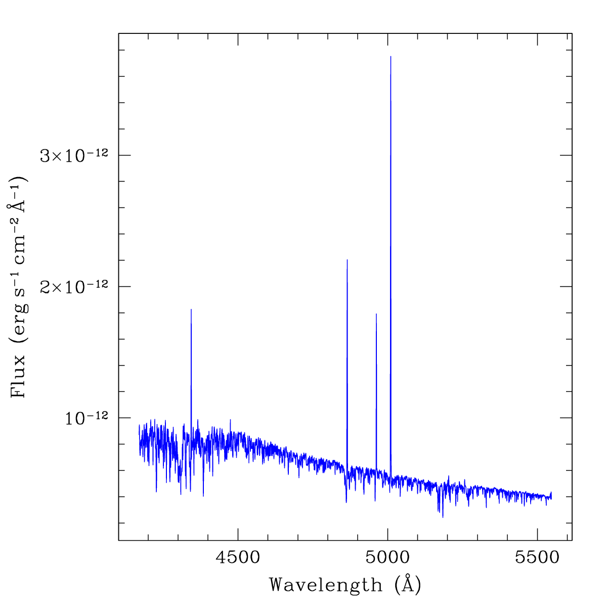
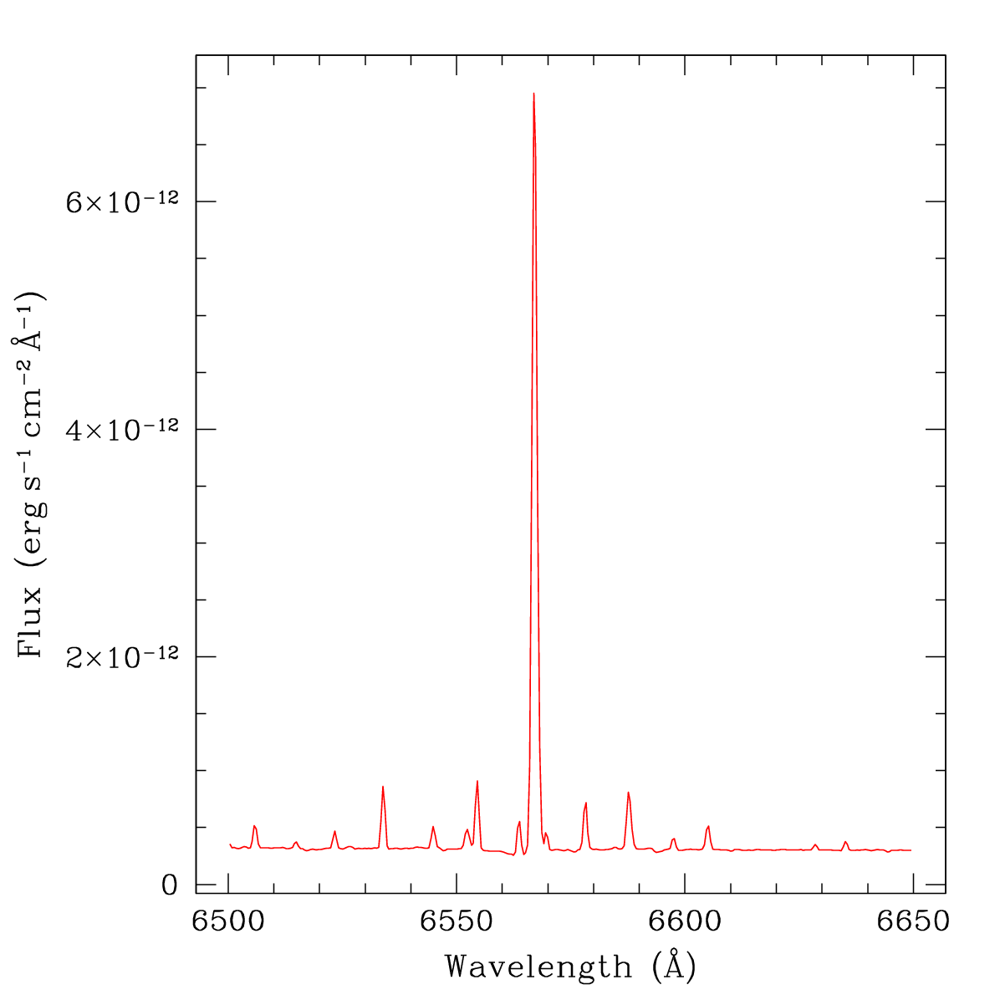
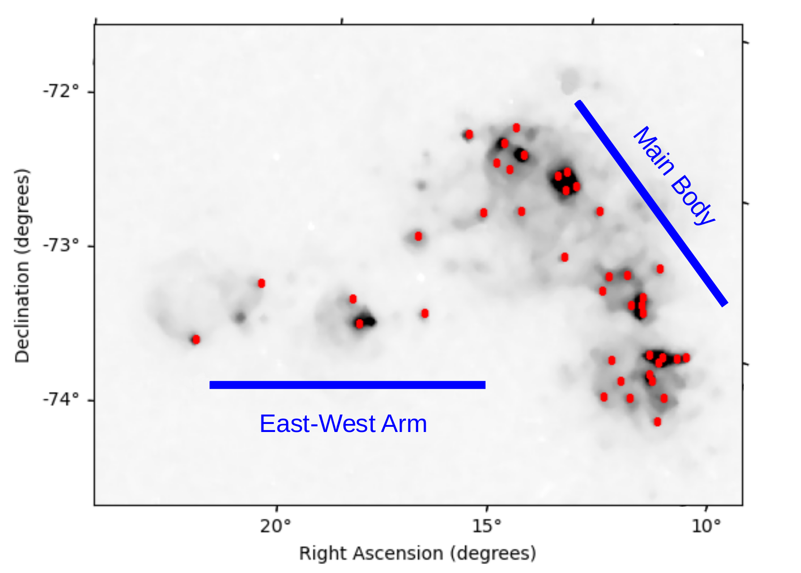
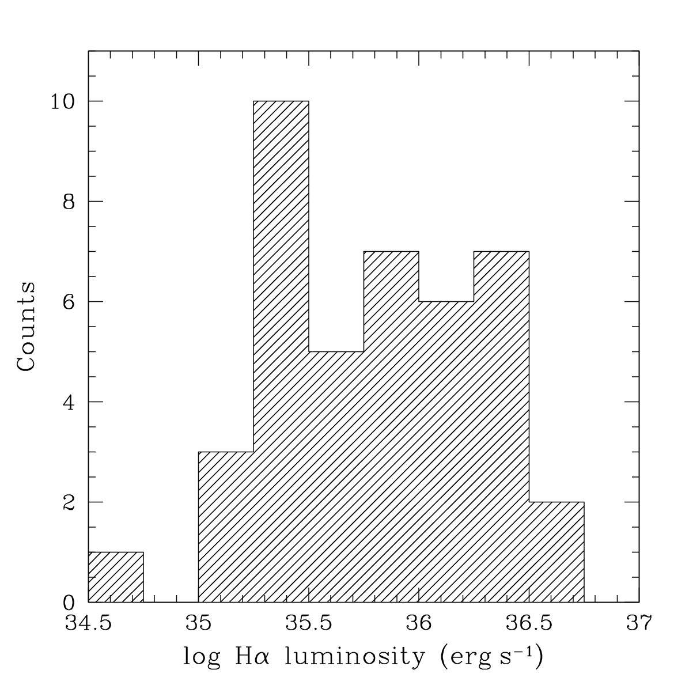
تأتي هذه الورقة متابعة لدراستنا لخطوط الانبعاث البصرية في سحابة ماجلان الكبرى (LMC) (Lah et al., 2024). استخدم المشروع وقت الرصد المضيء على تلسكوب ANU ذي القطر 2.3m مع مطياف WiFeS (Dopita et al., 2007, 2010). إن WiFeS مطياف مجال متكامل ذو مجال رؤية 38 25 arcsec وبحجم عنصر مكاني 1 arcsec (950 عناصر مكانية بالمجموع). وله ذراعان طيفيتان، زرقاء وحمراء. كانت الفكرة هي رصد حقول متعددة موزعة عبر SMC وجمع جميع البكسلات في كل رصد IFU لإنشاء طيف أحادي البعد لكل حقل بنسبة إشارة إلى ضجيج عالية.
استُخدمت محزوزتا WiFeS الطيفيتان B7000 () وR7000 (). يستخدم WiFeS فاصلا ثنائي اللون، ولذلك تُحصل أطياف الذراعين الزرقاء والحمراء في الوقت نفسه. اختيرت الحقول المراد رصدها من Southern H-Alpha Sky Survey Atlas (SHASSA; Gaustad et al., 2001). يجمع SHASSA رصود مرشحات ضيقة وعريضة النطاق متمركزة على خط انبعاث H بحيث يمكن قياس تدفق انبعاث H. يبلغ مستوى حساسية SHASSA erg s-1 cm-2 arcsec-2. اختيرت الحقول لتوفير تغطية جيدة لمناطق انبعاث H الرئيسة في SMC. واستندت أزمنة التكامل إلى قيم التدفق التي أبلغ عنها SHASSA، وإلى حساسية الجهاز التجريبية التي قسناها في رصودنا لـ LMC (Lah et al., 2024). رُصدت الحقول ذات تدفق SHASSA الأكبر من erg s-1 cm-2 arcsec-2 لمدة 20 دقائق؛ وكان عدد هذه الحقول 27. ورُصدت الحقول ذات تدفق SHASSA بين 6 و erg s-1 cm-2 arcsec-2 لمدة 40 دقائق؛ وكان عددها 18 حقلا. وهذا يعطي مجموعا قدره 45 حقلا. أُخذت الرصود على مدى 6 ليال خلال ربيع نصف الكرة الجنوبي من عام 2021.
خُفِّضت البيانات باستخدام PyWiFeS (Childress et al., 2014) وبالاعتماد على إطارات الانحياز والمسطحات والأقواس المرصودة، لإنتاج مكعب بيانات أزرق وآخر أحمر لكل حقل من الحقول 45. تمتد تغطية مكعبات البيانات في الطول الموجي من 4170 إلى 5548 Å (الطيف الأزرق)، ومن 5400 إلى 7000 Å (الطيف الأحمر). عند هذه المرحلة جُمعت مكعبات البيانات لتعطي أطيافا أحادية البعد. وكان الجمع البسيط كافيا، إذ لم يكن هناك تباين كبير في مستوى الضجيج من بكسل إلى آخر. وكان الصفان السفليان من البكسلات في بيانات IFU بكسلات رديئة ذات مستوى ضجيج عال، فأُزيلا. وبذلك بقي جمع IFU على مساحة 37 25 arcsec. لم يُجر طرح للسماء لأننا كنا ننظر إلى خطوط الانبعاث فوق مستوى المتصل. وباستخدام برنامج Manual and Automatic Redshifting (MARZ, Hinton et al., 2016)، حُددت سرعة قطرية أولية لكل طيف أحادي البعد من الأطياف الزرقاء. حُددت السرعات القطرية أساسا من خط انبعاث H، مع خطوط تأكيد من خطوط [Oiii] عند 4959 Å و5007 Å. ومن بين الحقول 45، كان عدد الحقول ذات السرعات القطرية الأولية القابلة للقياس 43.
قيسَت خصائص خطوط الانبعاث H و وH و[Nii] من أطياف WiFeS باستخدام شيفرة Python كما وصفها Lah et al. (2024). وتُنمذج المحزوزتان، الزرقاء والحمراء، على نحو مستقل في هذه الشيفرة. ويُزاد متجه الضجيج الشكلي قبل الملاءمة لأخذ الارتباطات بين البكسلات في الحسبان. ويُقدّر ذلك من ملاءمة خطية للمتصل على مسافة Å على جانبي خط الانبعاث مع حجب الانبعاث. ثم تُحسب قيمة متينة للانحراف المعياري للبواقي. وتُعاير اللايقينيات الشكلية بحيث يصبح وسيطها الجديد في منطقة الملاءمة مساويا للانحراف المعياري للبواقي. ثم تُنمذج البيانات، مع متجه الضجيج المعاير، على أنها مجموع متصل خطي وخطوط انبعاث غاوسية. وتُكامل الخطوط على كل بكسل طيفي. وضمن القياسات قد يكون لكل من H و[Oiii] وH و[Nii] انزياحات حمراء وعروض خطوط مختلفة. أما الزوجان المزدوجان، [Oiii] و[Nii]، فلهما نسب خطوط ثابتة كما تقتضي الفيزياء الذرية. لذلك لدينا لكل محزوزة ثمانية معاملات حرة: معاملان للمتصل الخطي، وثلاثة لخط إعادة الاتحاد، وثلاثة للمزدوجة المثارة تصادميا. وللوصول إلى التقارب كان من الضروري تثبيت الانزياح الأحمر لـ H عند قيمة [Oiii] ، وهو خط كان عادة أقوى في البيانات. وتُستخرج معاملات أفضل ملاءمة باستخدام خوارزمية انحدار خطي بسيطة. وهكذا نحصل على قياس لتدفق الخطوط، والسرعة القطرية للخطوط، والعرض الكامل عند نصف القيمة العظمى (FWHM) للخطوط. وقد وفر إعادة أخذ العينات بالتمهيد مئة مرة لايقينيات لهذه الكميات.
إضافة إلى ذلك، أُجريت قياسات لخطوط السماء الساطعة عند 6300.304 Å و6863.955 Å. وُجدت إزاحة في السرعة القطرية المقيسة من خط انبعاث H. استُخدمت قياسات خطوط السماء هذه لتصحيح تلك الإزاحة وكذلك لتكميم الدقة الجهازية.
من بين الحقول 43، كان للحقل 41 قياسات ذات دلالة لانبعاث H. ولكي تُعد ذات دلالة، كان يجب أن يكون لتدفق خط H في الخط قيمة لا تقل عن 3 أضعاف الضجيج في الخط، وأن يكون الانزياح الأحمر بين 100 km s-1 و300 km s-1 (الحدود التقريبية لمدى السرعة القطرية في SMC)، وأن يكون FWHM الغاوسي لـ H بين Å وÅ (لضمان أن الخط ليس نتوء ضجيج أو مطابقا للمتصل). إضافة إلى ذلك، كان يجب أن يكون للدقة الجهازية المقيسة من خطوط السماء عند 6300.304 Å وعند 6863.955 Å مقدار FWHM غاوسي Å.
يمكن رؤية موضع حقول خط انبعاث H في الشكل 2 مرسوما فوق صورة SHASSA لمناطق Hii في SMC. يمتد الجسم الرئيس لـ SMC، حيث توجد الغالبية العظمى من النجوم، من الشمال إلى الجنوب في هذه الصورة. ويمكن رؤية الذراع الشرقية الغربية لـ SMC في انبعاث H لكنها تحتوي على نجوم قليلة جدا. وتمتد مناطق انبعاث Hi ذات الدلالة من رصود Staveley-Smith et al. (1995, 1997); Stanimirović et al. (1999, 2004) على طول الجسم الرئيس لـ SMC، وتمتد أيضا على طول الذراع الشرقية الغربية، على غرار مناطق Hii.
3 النتائج
3.1 فلزية الطور الغازي
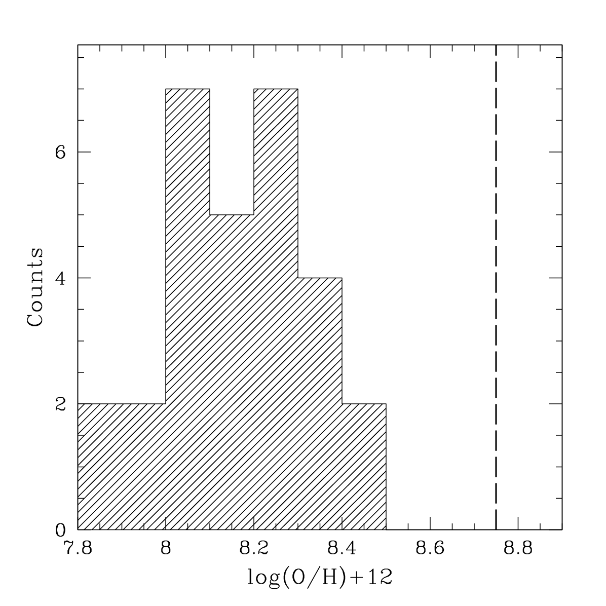
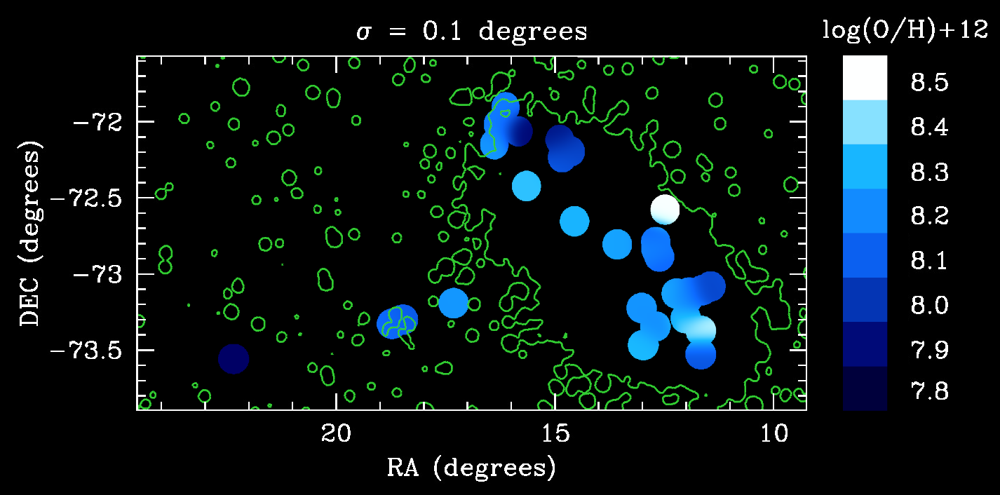
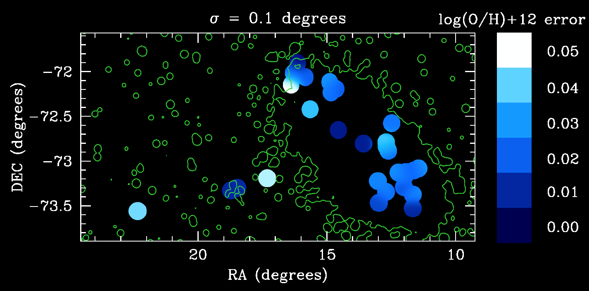
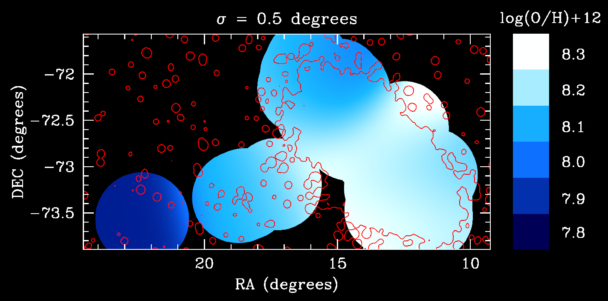
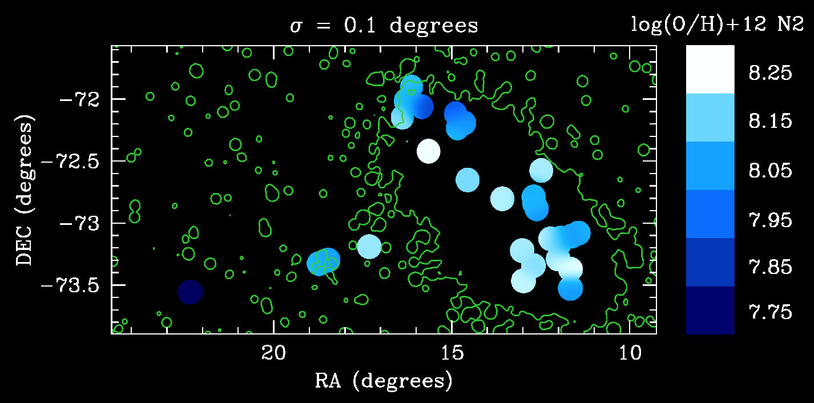
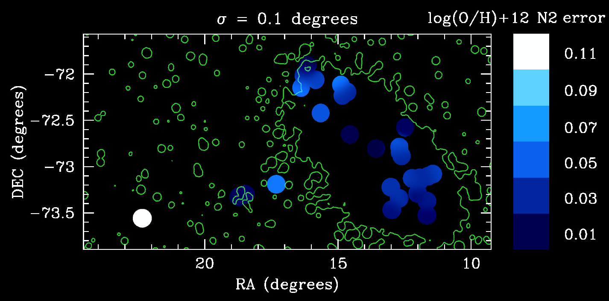
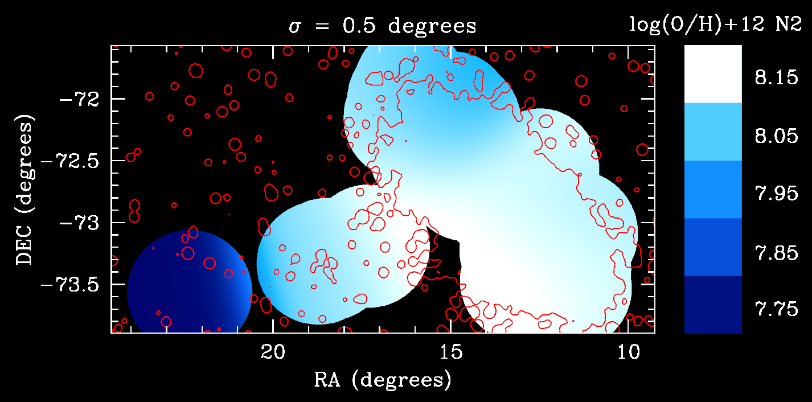
| Literature | This Work’s | This Work’s | ||||
|---|---|---|---|---|---|---|
| Source | Object | R.A. | Dec. | log(O/H)+12 | log(O/H)+12 | [Nii] |
| Testor (2001) | N25 | 12.04 | -73.24 | 8.00 0.05 | 8.250 0.022 | 8.158 0.027 |
| Testor (2001) | N26A-B | 12.03 | -73.25 | 7.98 0.03 | 8.262 0.021 | 8.164 0.026 |
| Carlos Reyes et al. (2015) | N12B | 11.38 | -73.08 | 7.97 0.03 | 8.045 0.026 | 8.061 0.035 |
| Carlos Reyes et al. (2015) | N66 | 14.79 | -72.17 | 7.97 0.03 | 8.011 0.024 | 8.003 0.040 |
| Carlos Reyes et al. (2015) | N81 | 17.32 | -73.20 | 8.09 0.03 | 8.227 0.045 | 8.180 0.058 |
| Carlos Reyes et al. (2015) | N83A | 18.44 | -73.30 | 8.03 0.03 | 8.096 0.010 | 8.057 0.014 |
| Toribio San Cipriano et al. (2017) | N66A | 14.81 | -72.18 | 8.00 0.02 | 8.021 0.023 | 8.015 0.038 |
| Toribio San Cipriano et al. (2017) | N81 | 17.30 | -73.19 | 8.01 0.02 | 8.227 0.045 | 8.180 0.058 |
| Toribio San Cipriano et al. (2017) | NGC 456 | 18.44 | -73.29 | 8.06 0.05 | 8.096 0.010 | 8.055 0.014 |
لتحليل فلزية الطور الغازي لدينا، اعتُبرت عينة أصغر من 29 حقلا استنادا إلى قياسات H و وH و[Nii]6584. ولكي يُعد كل خط ذا دلالة كان يجب أن يكون له FWHM غاوسي بين Å و Å ، وسرعة قطرية بين km s-1 و km s-1 ، ونسبة إشارة إلى ضجيج في الخط . حُسبت فلزية الطور الغازي لحقول SMC باستخدام الصيغة الواردة في Pettini and Pagel (2004),
| (1) |
حيث
| (2) |
استُخدمت هذه الصيغة لفلزية الطور الغازي لأن نسبة نوعي الخطين كانت في كلا الحالتين ضمن الطيف المرصود نفسه؛ أي إن H و[Oiii] 5007 كلاهما يقعان في الطيف الأزرق، وإن H و[Nii] 6584 كلاهما يقعان في الطيف الأحمر. وهذا يعني أن أي لا دقة في معايرة التدفق بين الطيفين الأزرق والأحمر لن تؤثر في النتائج. وكذلك، لأن خطوط الانبعاث في النسبة متقاربة نسبيا في الطول الموجي، لم يكن تصحيح الانطفاء ضروريا. يُعرض مدرج فلزيات الطور الغازي لحقول SMC في الشكل 4. تبلغ فلزية الطور الغازي الدنيا 7.87 dex والعليا 8.50 dex؛ ويبلغ متوسط فلزية الطور الغازي للحقول 8.17 dex (للمقارنة، يبلغ متوسط فلزية الطور الغازي الذي نجده في رصودنا لـ LMC 8.33 dex). يسرد الجدول 4 في الملحق قيم تدفق خطوط الانبعاث المستخدمة هنا، مع المواضع وفلزيات الغاز لكل حقل.
لعرض توزيع فلزية الطور الغازي، بُنيت شبكة في المطلع المستقيم والميل تحتوي SMC. وتُحسب فلزية الطور الغازي لكل نقطة في هذه الشبكة بجمع قيم الفلزية لكل حقل، باستخدام أوزان غاوسية مبنية على المسافة بين مركز الحقل ونقطة الشبكة. ومن ثم تُعطى الأوزان، ، بالعلاقة
| (3) |
حيث إن هي المسافة بين نقطة الشبكة ومركز الحقل، و هو حجم النواة الغاوسية. تضرب هذه الأوزان فلزيات كل حقل، وتُطبّع المحصلة الموزونة بمجموع الأوزان لتحديد الفلزية عند نقطة الشبكة. وينتج عن ذلك خريطة مستوفاة للفلزية عبر SMC. ولا تُعطى أي قيمة لنقاط الشبكة التي تبعد أكثر من مسافة وزن واحدة عن أي توجيه. وهذا يمنع الاستقراء بعيدا عن الحقول المقيسة.
تُعرض هذه الخريطة المستوفاة لفلزية الطور الغازي في الشكل 5، حيث تبين اللوحة العلوية الاستيفاء باستخدام degree واللوحة السفلية باستخدام degree. في استيفاء degree يعني القطع أن منطقة صغيرة فقط حول كل توجيه تُعرض. وفي الغالب يكون القطع صغيرا بما يكفي لأن تُعطى القيمة الواقعة مباشرة تحت الاستيفاء وزنا فقط. ومع ذلك، توجد مناطق تكون فيها الحقول متقاربة بما يكفي لتؤثر في القيم المعروضة داخل منطقة قطع واحدة. ويغطي استيفاء degree مناطق لا تحوي انبعاث H. يماثل هذا الاستيفاء ما قد يُرى لمجرة عند انزياح أحمر عال، حيث لا تُحل مناطق Hii فرادى. كما قد يكون تمييز الاتجاهات في هذه الصورة الملسّنة أسهل.
في خريطة degree، يظهر الجسم الرئيس لـ SMC تباينا كبيرا بين الحقول المتجاورة. ويقع هذا التباين داخل ما يبدو منطقة Hii واحدة في صورة SHASSA، وقد يكون علامة على الطبيعة المضطربة لـ SMC. وتضيع هذه التفاصيل في خريطة degree الملسّنة، حيث تُظهر الاتجاهات واسعة النطاق أن المنطقة المركزية من SMC ذات فلزية أعلى، وتحيط بها أجنحة أقل فلزية. يبلغ تدرج الفلزية من المركز إلى شمال المجرة نحو -0.095 dex/kpc، مع تدرج أقل انحدارا من المركز إلى جنوب المجرة يبلغ نحو -0.013 dex/kpc. وهذا يتسق مع وجود تدرج في فلزية الطور الغازي عبر SMC، ويتوافق مع تدرج الفلزية النجمية الذي وجده مؤلفون كثيرون (Carrera et al., 2008; Dobbie et al., 2014b; Piatti, 2015; Parisi et al., 2016; Choudhury et al., 2018, 2020; Narloch et al., 2021; Parisi et al., 2022). وتنخفض فلزية الطور الغازي مع الحركة شرقا على طول الذراع الشرقية الغربية. ويشير ذلك إلى أن تشكل النجوم في هذه الذراع ربما بدأ أقرب إلى الجسم الرئيس لـ SMC ثم تحرك إلى الخارج مع الزمن.
يبلغ متوسط وفرة الأكسجين الموجود لـ SMC 8.17 dex. وللمقارنة، قاس Kurt et al. (1999) قيما تتراوح من 7.96 إلى 8.17 dex باستخدام مشخصات تجريبية لخطوط الانبعاث، وقاس Reyes (1999) قيمة 7.96 dex باستخدام نمذجة التأين الضوئي، وقاس Garnett (1999) قيمة 8.0 dex من مراجعة للأدبيات، وقاس Peimbert et al. (2000) قيمة 8.15 dex من خطوط مثارة تصادميا، وقاس Testor (2001) قيما من 7.98 إلى 8.00 dex، وقاس Testor et al. (2003) قيمة 7.98 dex، وقاس Peña-Guerrero et al. (2012) قيما من 8.01 إلى 8.23 dex من خطوط مثارة تصادميا، وقاس Carlos Reyes et al. (2015) قيمة 7.96 dex من المقارنة بنماذج شيفرة CLOUDY، وقاس Toribio San Cipriano et al. (2017) قيما من 7.94 إلى 8.06 dex من خطوط مثارة تصادميا. وغالبا ما تأتي هذه القياسات من منطقة Hii واحدة أو منطقتين فقط، لكنها متسقة على نحو لافت ومعظمها أدنى من قيمتنا. وقد يعود بعض الاختلاف إلى اختلاف خطوط الانبعاث المستخدمة، إذ إن قياسات الأدبيات غالبا ما تعتمد على خطوط انبعاث كثيرة أخفت. غير أن Tchernyshyov et al. (2015) يوردون وفرة فوتوسفيرية مرجعية لفلزية الأكسجين في SMC مقدارها ، وهي قريبة من قيمتنا. ومن العوامل الرئيسة التي قد تؤثر في نتائجنا أن الطريقة التجريبية لـ Pettini and Pagel (2004) التي نستخدمها لها تشتت قد يصل إلى 0.32 dex بحسب Pérez-Montero and Contini (2009) أو 0.25 dex بحسب López-Sánchez et al. (2012). يبين الجدول 1 مقارنة مناطق Hii الفردية حيث تتداخل حقولنا مع حقول في الأدبيات ذات إحداثيات محددة.
تتغير فلزية الطور الغازي التي نجدها بمقدار 0.63 dex بين أعلى قياس وأدناه. وهذا تغير كبير إلى حد ما مقارنة بمجرات أخرى. ومع ذلك، يُتوقع أن تُظهر المجرات الصغيرة تباينا أكبر، إذ يمكن لحدث واحد من تشكل النجوم أن يترك أثرا كبيرا. ولا يُعد مقدار التباين غير مسبوق، كما يظهر في عينة 49 من مجرات حقلية محلية مكوّنة للنجوم لدى Ho et al. (2015).
حددنا أيضا فلزية الطور الغازي باستخدام قياسات [Nii] للحقول نفسها في SMC استنادا إلى صيغة Pettini and Pagel (2004),
| (4) |
حيث . واستُخدم تحويل من Kewley and Ellison (2008) لمعايرة هذه التقديرات إلى تقديرات O3N2 أعلاه وإتاحة المقارنات المباشرة:
| (5) |
حيث إن هو قياس فلزية N2 الأصلي.
يبلغ قياس فلزية [Nii] الأدنى 7.73 dex والأعلى 8.24 dex؛ أما المتوسط فيبلغ 8.10 dex. يعرض الشكل 6 خرائط ملسّنة أُنشئت بالطريقة نفسها المستخدمة في الخرائط المعتمدة على معايرة O3N2. ويحافظ مقياس [Nii] لفلزيات الطور الغازي على ترتيب الرتب لفلزيات الطور الغازي O3N2، لكن يوجد انحياز منهجي معتدل بين الطريقتين. ويبدو أن فلزية الطور الغازي O3N2 هي القياس الأفضل، لأنها لا تتشبع عند الفلزية العالية كما يبدو أن [Nii] يفعل، كما تعطي أخطاء شكلية أصغر.
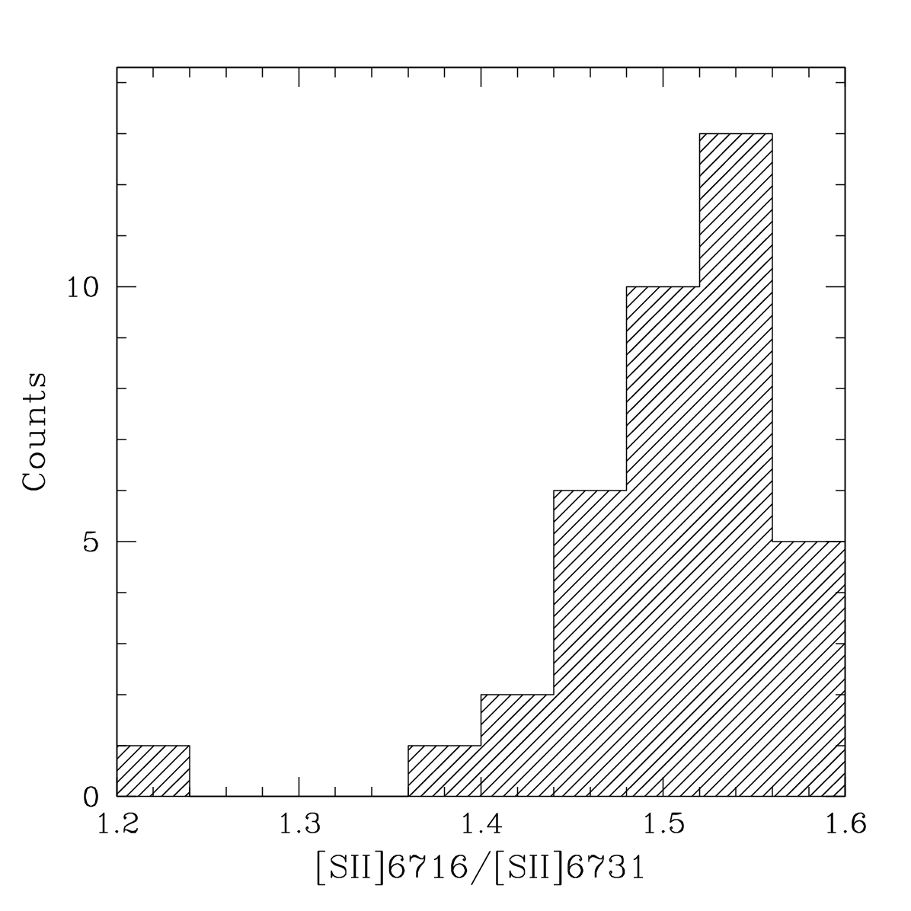
بالنسبة إلى الحقول، قيسَت تدفقات خطي انبعاث [Sii] عند 6716 Å و6731 Å لمعرفة ما يمكن استنتاجه عن الكثافة الإلكترونية من نسبتهما. وتُعرض نسبتهما في الشكل 7. تكون النسبة دائما أعلى من 1.2 (وغالبا أعلى بكثير)، وهو ما يقع في المجال من كثافة إلكترونية 1 إلى 100 cm-3 حيث تكون علاقة نسبة خط [Sii] بالكثافة الإلكترونية مسطحة إلى حد معقول (Sanders et al., 2016). لذلك فإن كل ما يمكن تحديده هو أن الكثافة الإلكترونية في حقولنا منخفضة.
3.2 الانطفاء
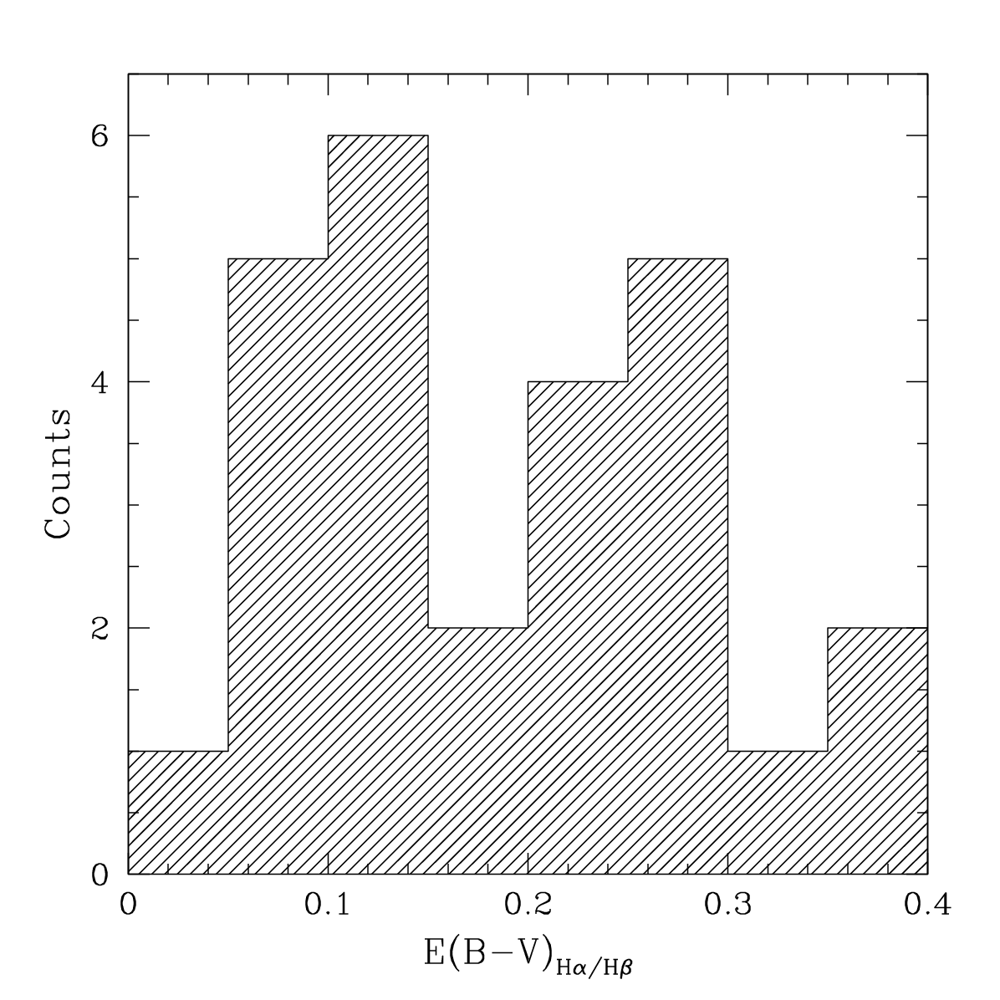
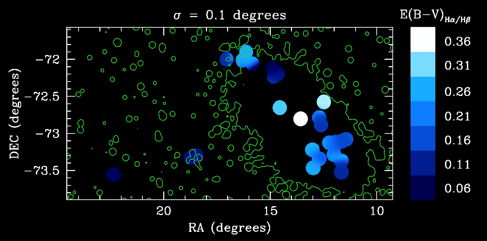
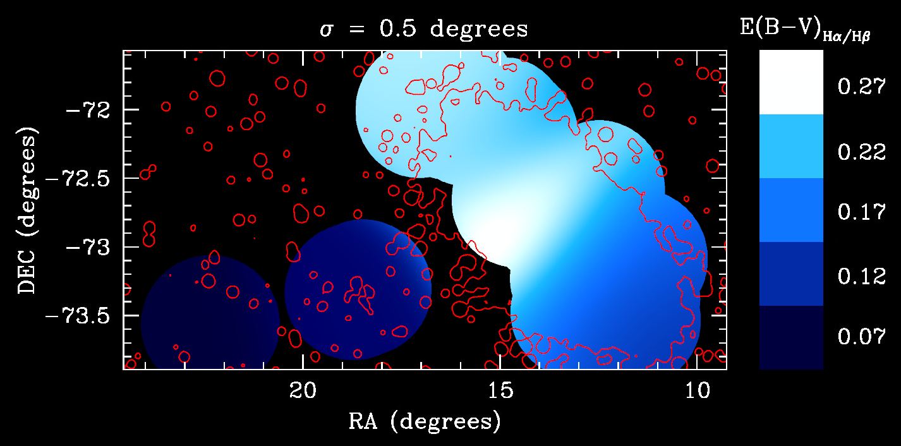
قيس الانطفاء عبر SMC باستخدام نسبة تدفق خط انبعاث H إلى تدفق خط انبعاث H. ولحساب الانطفاء نستخدم
| (6) |
حيث إن هي نسبة التدفق المرصود لـ H إلى H، و هي نسبة التدفق الجوهري لـ H إلى H (واتُخذت مساوية لـ 2.86 في الحالة التي يكون فيها شرط إعادة الاتحاد B ذا درجة حرارة T=10,000 K وكثافة إلكترونية 100 cm-3؛ Osterbrock and Ferland (2006)). وأُخذت قيمتا kHβ وkHα من منحنى انطفاء قضيب SMC لدى Gordon et al. (2003)، باستخدام ملاءمة spline للبيانات أعطت kHβ = 3.268 وkHα = 2.171.
لكي يُعد الحقل ذا دلالة في قياس الانطفاء، كان يجب أن يكون لخطي انبعاث H وH فيه FWHM غاوسي بين Å وÅ ، وسرعة قطرية بين km s-1 و km s-1 ، ونسبة إشارة إلى ضجيج في تدفق كل خط . إضافة إلى ذلك، كان يجب أن يكون لحساب الانطفاء خطأ في . أبقت هذه الشروط ما مجموعه 26 حقلا ذا دلالة. ويُعرض مدرج لهذه الحقول في الشكل 8. ويمكن العثور على قيم عينة الانطفاء في الجدول 5 في الملحق. يبلغ متوسط قيمة 0.185 (في المقابل كان متوسط الانطفاء في عملنا على LMC 0.157). والانطفاء الأدنى هو 0.035 والأعلى هو 0.36. وتُعرض خرائط مشابهة لتلك المنشأة لفلزية الطور الغازي في الشكل 9؛ اللوحة العلوية مع = 0.1 degree واللوحة السفلية مع = 0.5 degree.
في الخرائط، تملك الحقول في الذراع الشرقية انطفاء منخفضا مقارنة بكثير من بقية SMC (بدءا من قيمة عظمى = 0.91 ثم انخفاضا إلى 0.68 باتجاه الشرق). إن عمر منطقة Hii من رتبة ملايين السنين، وهو عمر النجوم المؤينة. ووفقا لـ Jones and Nuth (2011) فإن أعمار الغبار من رتبة سنة بسبب موجات الصدمة الناتجة عن المستعرات العظمى. توجد نجوم قليلة جدا في الذراع الشرقية الغربية، ولذلك يمكن القول على الأرجح إن الغبار لم ينتج إلا محليا في منطقة تشكل النجوم، وعلى الأرجح في تشكل النجوم الحديث. وما يلمح أيضا إلى صلة بتشكل النجوم هو أن فلزية الغاز تنخفض مع الحركة شرقا على طول الذراع، مما يشير إلى أن تشكل النجوم في الذراع حديث فقط.
تتوافق قيم الانطفاء الأعلى في مركز الجسم الرئيس لـ SMC مع حقول فلزية الطور الغازي العالية، مما يدل على أن هذه المناطق شهدت كثيرا من تشكل النجوم، على الأرجح خلال فترة طويلة. وفي خرائط = 0.5 degree يبدو أن هناك تدرجا من مركز الجسم الرئيس لـ SMC إلى أطراف الجسم الرئيس، شبيها بفلزية الطور الغازي. يبلغ تدرج الانطفاء هذا نحو 0.086 E(B-V)/kpc من المركز باتجاه الشمال، ويكون أضحل، نحو 0.0089 E(B-V)/kpc، من المركز باتجاه الجنوب.
قاس Górski et al. (2020)، باستخدام نجوم الكتلة الحمراء، قيمة متوسطة للاحمرار عبر SMC مقدارها E(B-V) = . أما قيمتنا المتوسطة البالغة 0.185 فهي بعيدة عنها بعض الشيء. غير أن E(B-V)Hα-Hβ لدينا يتغير من 0.035 إلى 0.364 عبر SMC. إضافة إلى ذلك، فإن البيئة التي توجد فيها نجوم الكتلة الحمراء مختلفة تماما عن مناطق تشكل النجوم الحديث التي تمثلها مناطق Hii. ولم تنجح محاولات مطابقة انطفاء مناطق فردية من الأدبيات مع حقولنا، ويرجع ذلك أساسا إلى اللايقين العالي للنجوم الفردية التي بُنيت عليها القياسات المنشورة.
3.3 السرعة القطرية
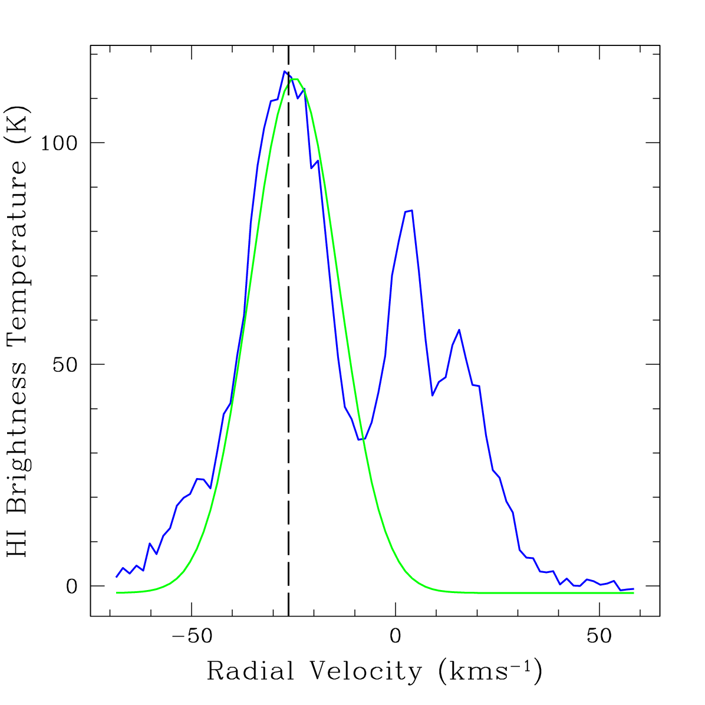
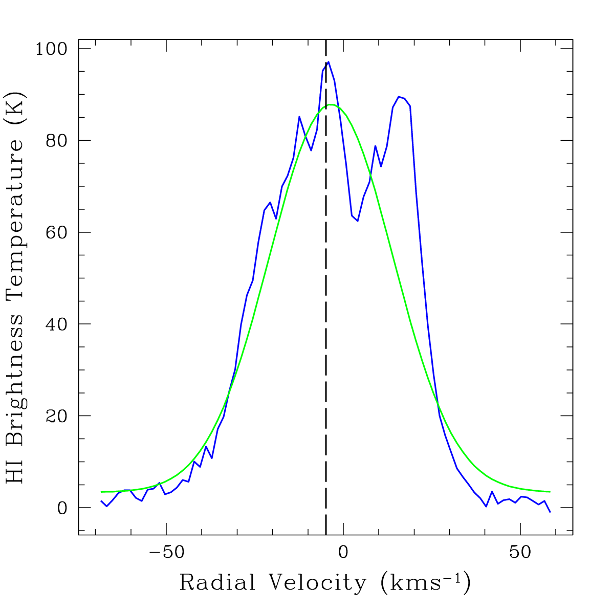
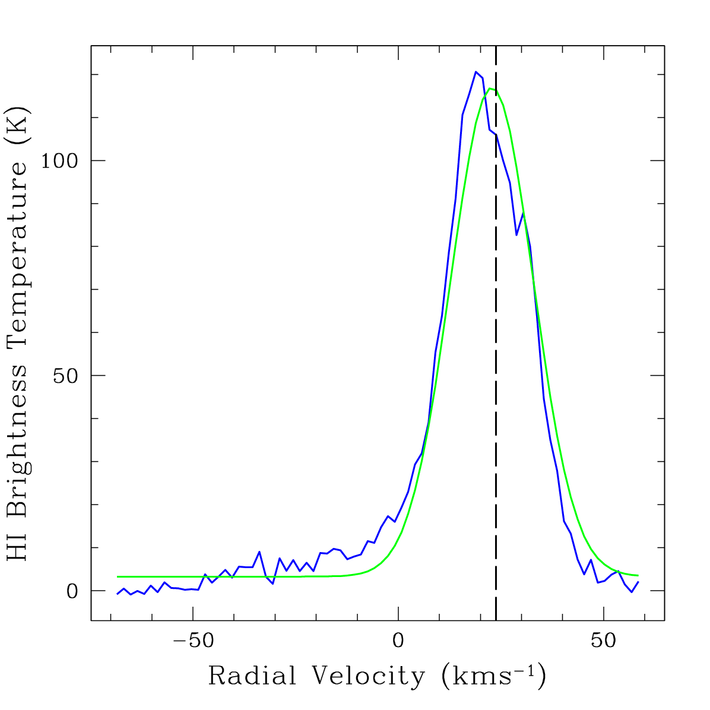
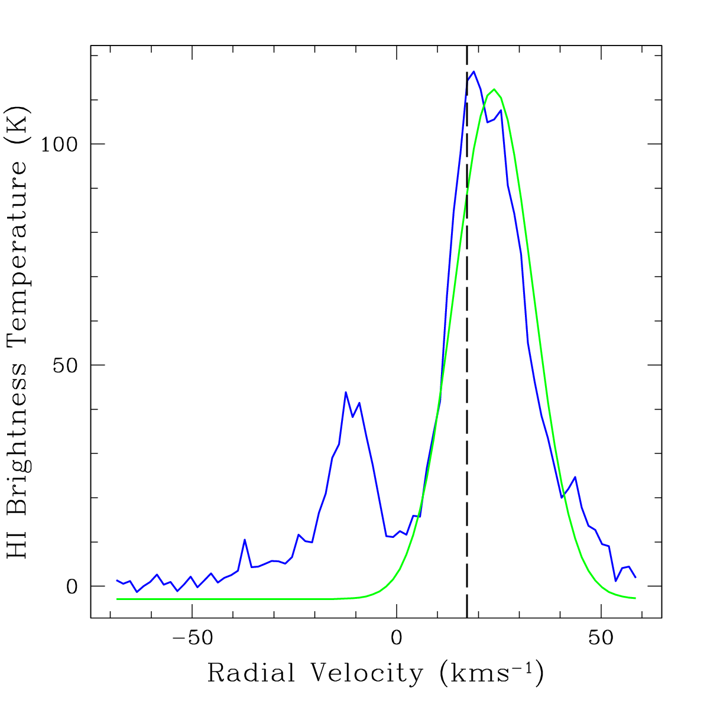
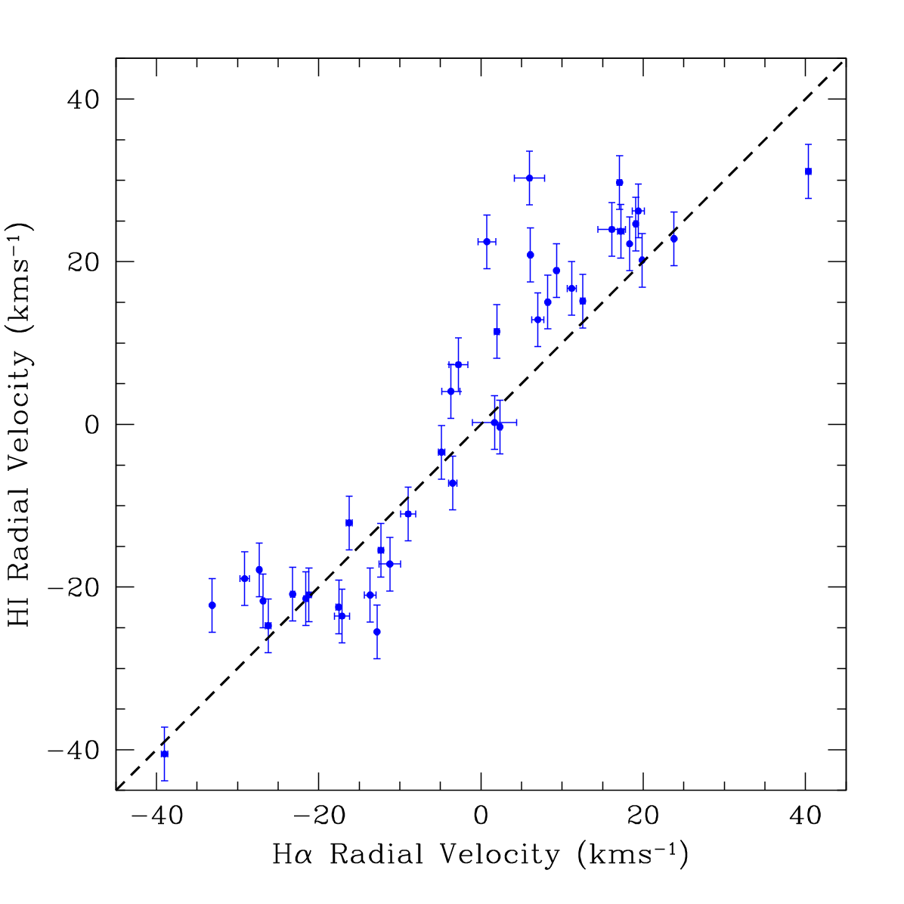
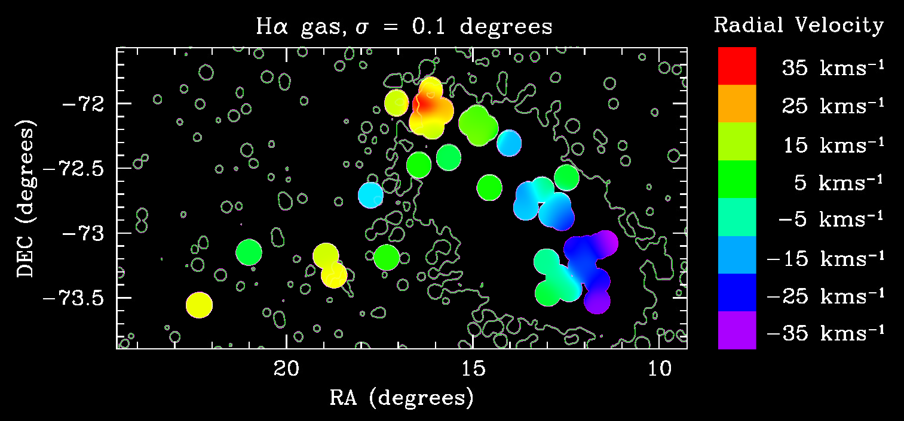
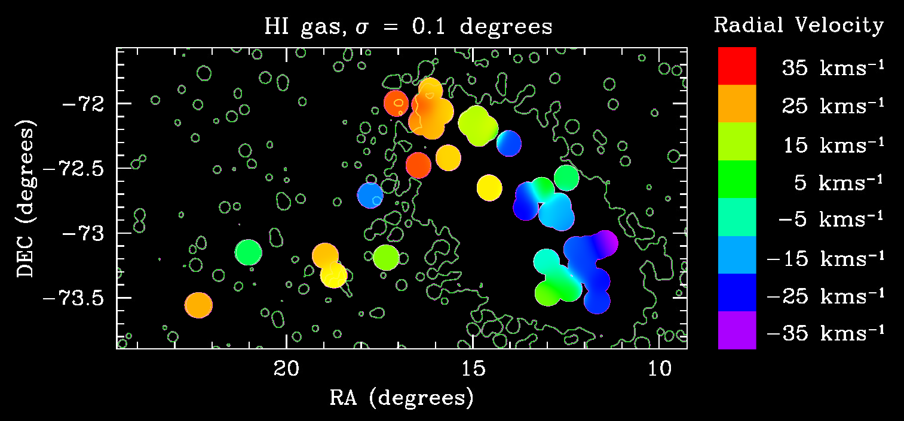
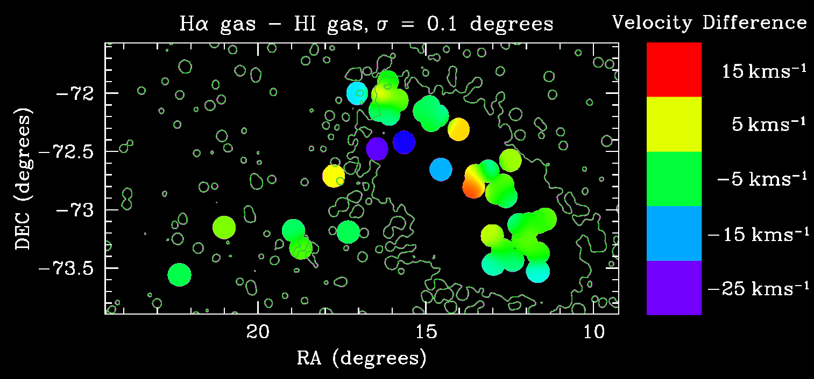
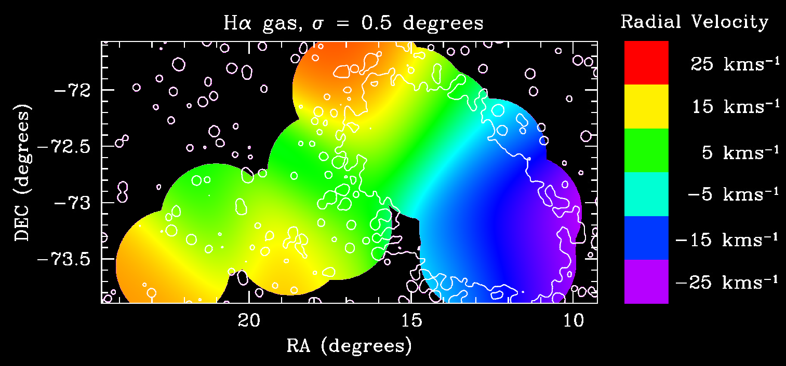
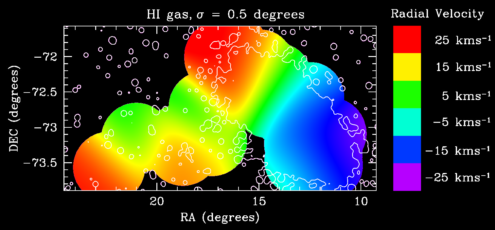
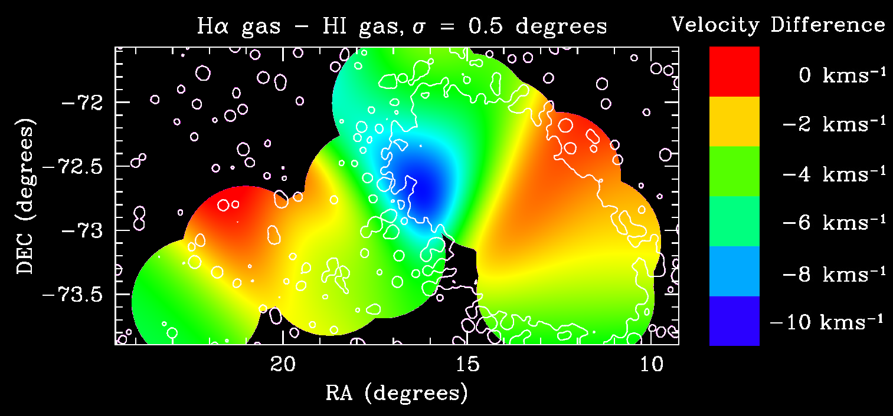
حُددت السرعة القطرية لكل حقل مرصود من خط انبعاث H. واستُخدمت قياسات خطوط السماء عند 6300.304 Å و6863.955 Å لتصحيح إزاحة في الطول الموجي وُجدت في خط H. أعطى خط السماء عند 6300.304 Å إزاحة تتراوح بين 33.5 و46.5 km s-1 لرصود مختلفة؛ وأعطى خط السماء عند 6863.955 Å إزاحة تتراوح بين 30.4 و41.2 km s-1 لرصود مختلفة. واستُخدم استيفاء خطي لتصحيح هذه الإزاحة. وبعد هذا التصحيح بقي خطأ منهجي من تصحيح الطول الموجي من رتبة 2 km s-1 ، واعتُبر مهملا لأن البكسلات الطيفية تقابل 20 km s-1 (ودقة السرعة الفعالة هي 43 km s-1). صُححت كل سرعة قطرية بالنسبة إلى السرعة المركزية الشمسية عند موضع الرصد وتاريخه؛ وتراوحت هذه من 7.7 إلى 12.7 km s-1 لرصود مختلفة. ويوجد 41 حقلا لها سرعات قطرية مقيسة من H. وطُرحت سرعة نظامية قدرها 157 km s-1 لـ SMC من السرعات القطرية المشتقة من نقطة منتصف حقولنا نفسها.
رغبنا في مقارنة السرعات القطرية لـ H (ولاحقا تشتتات السرعة) من مناطق Hii المرصودة بـ WiFeS مع السرعات القطرية (ولاحقا تشتتات السرعة) لغاز Hi الأبرد في المنطقة نفسها. غير أن هناك مشكلة: فتوزيع السرعة على خط النظر لـ Hi غالبا متعدد الأنماط، مع قمتين (وأحيانا ثلاث قمم) في بيانات الأدبيات لانبعاث Hi عند 21 cm المأخوذة من (Staveley-Smith et al., 1995, 1997; Stanimirović et al., 1999, 2004). وتُعرض أمثلة لأطياف Hi عبر مكعب بيانات Hi عند مواقع حقول WiFeS في الشكل 10. نسمي كل قمة متميزة مكونا سرعتيا. قد يكون هذان المكونان بقايا مجرات فريدة مختلفة تتفاعل، أو قد يكون أحدهما حطاما مديا باقيا من تشكل SMC (Murray et al., 2024). وعلى أي حال، لا يوجد في خط انبعاث H إلا دليل على مكون سرعتي واحد، رغم أن الدقة الطيفية ليست بدقة Hi الطيفية. لذلك ربما لا نرى إلا انبعاث H من المكون الأقرب إلينا، بينما يحجب المكون الخلفي بالنجوم والغبار. ويمكن تحديد أي مكون سرعتي من Hi يحتمل أن يكون متصلا بنظام السرعة القطرية لـ H عبر فحص أطياف Hi عند كل موضع WiFeS كما في الشكل 10 (الخطوط المتقطعة في هذا الشكل هي السرعات القطرية لـ H). وبسبب الطبيعة متعددة المكونات السرعتية في بيانات Hi، لم يكن ممكنا أتمتة قياس السرعة القطرية لـ Hi (وتشتت سرعة Hi). وما أُنجز بدلا من ذلك هو استخدام مهمة IRAF المسماة SPLOT لملاءمة غاوسيات يدويا لمكون سرعة Hi المرتبط بالسرعة القطرية لـ H في أطياف Hi عند موضع كل حقل WiFeS. والخطوط الخضراء في الشكل 10 هي هذه الملاءمات الغاوسية. ومن هذه الملاءمات أُخذت قياسات للسرعة القطرية لـ Hi وتشتت سرعة Hi. وكانت السرعات القطرية لـ Hi المقيسة بهذه الطريقة دقيقة إلى حد كبير، إذ توافق القمم في أطياف Hi جيدا. لكن شكل خط Hi لم يكن غالبا غاوسيا تماما، مما يعني أن تشتت السرعة الملائم لا يمكن وصفه إلا بأنه تقدير في هذه الحالات. وقد عنت هذه الطريقة أن لدينا قياسات عند مواقع حقول WiFeS ولكن ليس في أي مكان آخر في SMC. ويصبح ذلك مهما لاحقا عندما نقارن خرائط السرعة القطرية لـ H (وتشتت سرعة H) بتلك المشتقة من بيانات Hi.
تُعرض مقارنة السرعة القطرية لـ H بالسرعة القطرية لـ Hi عند 21 cm في كل حقل في الشكل 11. يوجد عموما توافق جيد عند معظم السرعات، وإن كان قد توجد أدلة على فروق منهجية عند بعض السرعات يمكن أن تمثل بنى في SMC. ويتطلب تفسير هذه الفروق فحص خرائط السرعة القطرية. وبالنسبة إلى حقول WiFeS، يبلغ الفرق الأدنى بين السرعة القطرية لـ H وHi مقدار 0.2 km s-1 ، والفرق الأقصى 24.3 km s-1.
أُنشئت خرائط استيفاء للسرعة القطرية لـ H شبيهة بتلك الخاصة بفلزية الطور الغازي، حيث تستخدم اللوحة العلوية من الشكل 12 degree، وتستخدم اللوحة العلوية من الشكل 13 degree. وفي خرائط degree يظهر دوران واضح على طول الجسم الرئيس لـ SMC. وتظهر الذراع الشرقية تغيرا ضئيلا في السرعة القطرية. وعند النظر بتفصيل في خرائط degree، تصبح الصورة أكثر تعقيدا. ففي الطرف الجنوبي من الجسم الرئيس لـ SMC مكونان، أحدهما عند 30 km s-1 والآخر عند 0 km s-1. الديناميكيات أعقد بوضوح من دوران بسيط على طول الجسم الرئيس لـ SMC، وقد تكون علامات على البنيتين المرئيتين في بيانات Hi.
وبما أننا لا نملك سرعات قطرية لـ Hi إلا لحقول WiFeS، فقد أُنشئت خرائط استيفاء بالطريقة نفسها التي استُخدمت في خرائط السرعة القطرية لـ H باستخدام هذه البيانات. وتُعرض النتائج بوصفها اللوحة الوسطى من الشكل 12 لخريطة degree واللوحة الوسطى من الشكل 13 لخريطة degree. حُسب الفرق بين السرعة القطرية لـ H وHi لكل حقل، ثم استُخدمت القيم الناتجة لإنشاء خرائط. ويمكن رؤية هذه الخرائط في اللوحة السفلية من الشكل 12 لخريطة degree، وفي اللوحة السفلية من الشكل 13 لخريطة degree.
بالنسبة إلى كثير من المناطق المشتركة، لا تُظهر السرعات القطرية لـ H وHi في الخرائط إلا فروقا صغيرة. ويُظهر كل من Hi وH دوران الجسم الرئيس لـ SMC، وكذلك منطقة إلى الجنوب والشرق لا يبدو فيها هذا الدوران على امتداد الجسم الرئيس لـ SMC. وأبرز فرق بين خرائط السرعة القطرية لـ H وHi هو الحقلان القريبان من مركز الشكل، حيث يكون H مزاحا كثيرا نحو الأزرق بالنسبة إلى Hi. يظهر ذلك في خرائط 0.1 و0.5 درجة، وإن بسرعات مختلفة بسبب التنعيم. وقد لا تكون مناطق Hii المقابلة لهذين الحقلين من WiFeS متصلة بغاز Hi الموجود في الموضع نفسه. وفي خريطة degree، كما هو متوقع، سُوّي كثير من التفاصيل. ويشمل ذلك المكونين عند الطرف الجنوبي من الجسم الرئيس اللذين اندمجا في الدوران العام لـ SMC.
يكشف فحص النجوم في SMC أنها تقع في جسم كروي غير دوار (Parisi et al., 2009; Dobbie et al., 2014a)، على خلاف غاز Hi الذي يظهر دورانا كبيرا (كما رأينا أعلاه). يفسر Bekki and Chiba (2008) هذا الفرق باقتراح أن SMC خضعت لاندماج كبير في المراحل المبكرة من تشكلها. وقد حوّل هذا الاندماج مجرتين قزمتين غير منتظمتين غنيتين بالغاز إلى قزم جديد يتكون من مكون نجمي كروي غير دوار وقرص Hi ممتد دوار. والغاز المؤين بالنجوم الجديدة (الغاز الباعث لـ H) يتبع عموما دوران غاز Hi كما هو متوقع من العمر القصير نسبيا لمناطق Hii (10 Myr). ومع ذلك نجد أيضا استثناءات مهمة، تبرز إما أن مناطق Hii هذه تتشكل في مناطق غريبة حركيا من قرص Hi، أو أن التغذية الراجعة النجمية وتغذية المستعرات العظمى يمكن أن تؤثر كثيرا في حركيات الغاز المكوّن للنجوم. عند الطرف الجنوبي من الجسم الرئيس لـ SMC، قد يكون المكون الواقع شرقا، الذي لا يشارك الجانب الغربي السرعة القطرية نفسها، بنية باقية من هذا الاندماج. ويختلف المكونان بما لا يقل عن 16 km s-1. بل قد يكون هذا علامة على المكونين السرعتيين المختلفين المرئيين في بيانات Hi.
3.4 تشتت السرعة
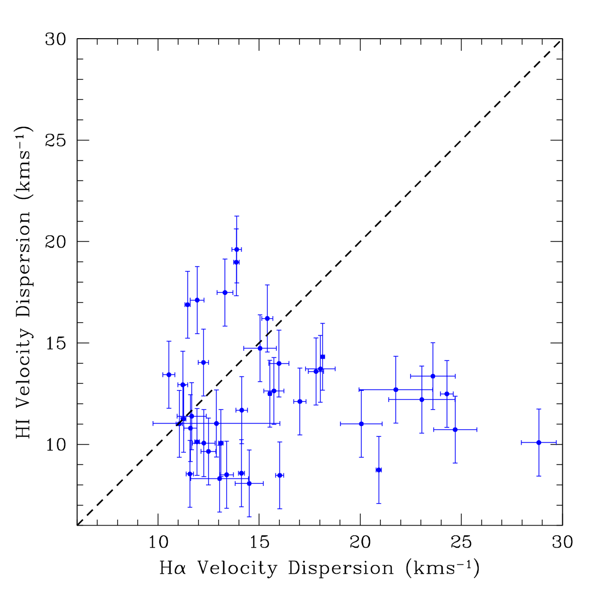
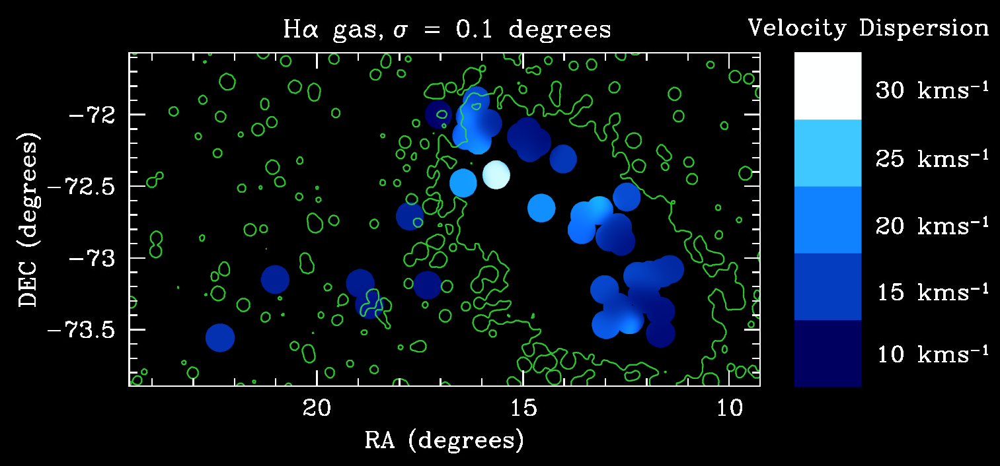
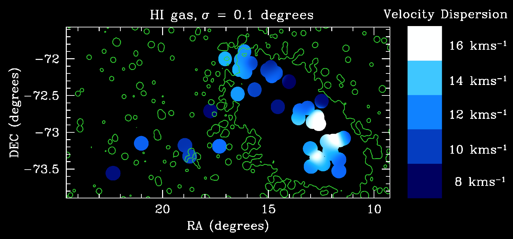
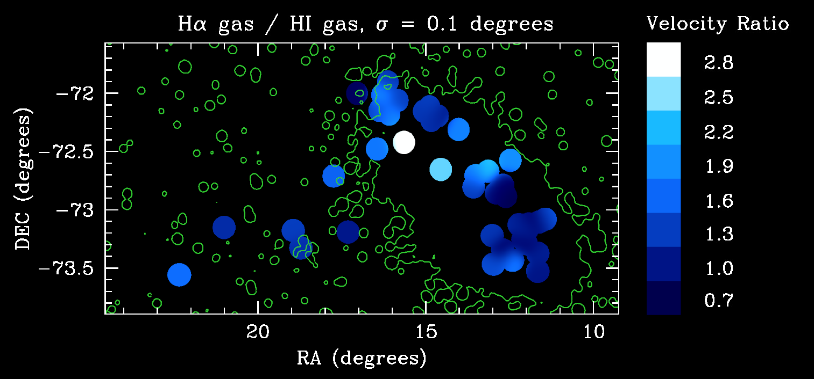
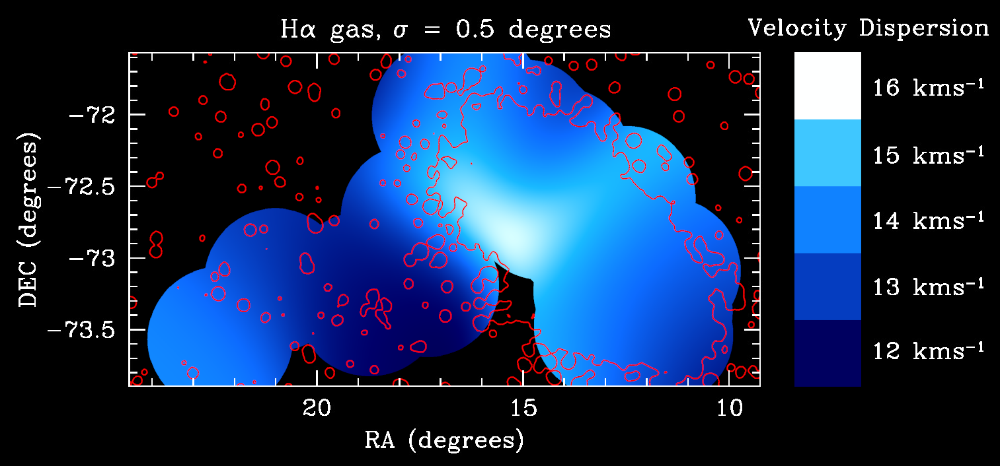
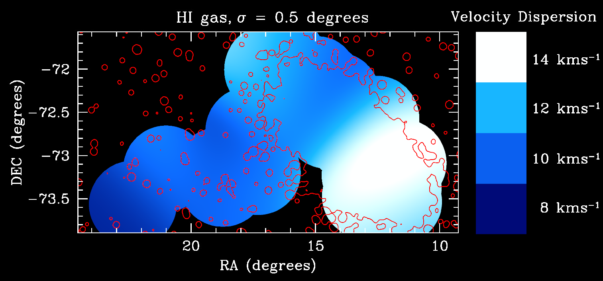
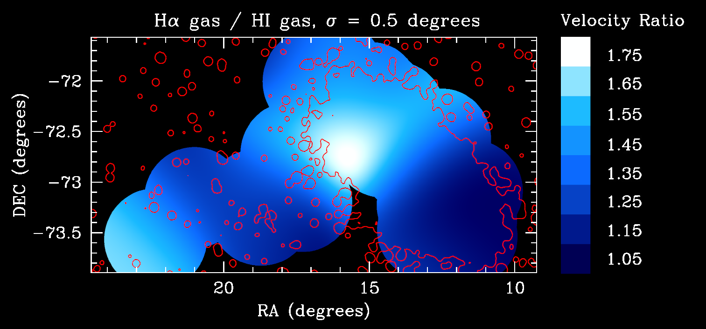
قيس تشتت السرعة لكل حقل من عرض خط انبعاث H باستخدام
| (7) |
حيث c هي سرعة الضوء، و هو الطول الموجي لـ H (6562.8 Å)، و هي السرعة القطرية لخط الانبعاث، و هو العرض الكامل الغاوسي عند نصف القيمة العظمى (FWHM) لخط انبعاث H، و هو الدقة الجهازية المقدرة لـ WiFeS عند الطول الموجي لـ H، والمشتقة باستيفاء خطي لـ FWHM الغاوسي لخطوط السماء القوية عند 6300.304 Å و6863.955 Å. توجد 41 حقلا لها تشتتات سرعة مقيسة. يبلغ تشتت السرعة الأدنى 10.5 km s-1 ، والأعلى 28.8 km s-1 ، والمتوسط 15.6 km s-1.
يبين الشكل 14، عند موضع كل توجيه، تشتت سرعة خط H مقارنة بتشتت سرعة غاز Hi من Staveley-Smith et al. (1995, 1997); Stanimirović et al. (1999, 2004) المقيس من أطياف Hi كما نوقش أعلاه. يكون تشتت سرعة H عادة أعلى من تشتت سرعة Hi، وإن لم يكن ذلك دائما. وهذا مشابه لما يُرى في LMC (Lah et al., 2024). يبلغ متوسط تشتت السرعة لغاز Hi 12.3 km s-1. وتتغير نسبة تشتت سرعة H إلى تشتت سرعة Hi من 0.68 إلى 2.9.
أُنشئت خرائط تشتت سرعة H على نحو مشابه لخرائط الفلزية. تعرض اللوحة العلوية من الشكل 15 خريطة تشتت سرعة H مع degree، وتعرض اللوحة العلوية من الشكل 16 خريطة تشتت سرعة H مع degree. والميزة الأكثر بروزا هي حقل ذو تشتت سرعة عال في خريطة degree قرب مركز الصورة. وتملك الذراع الشرقية عموما تشتت سرعة أقل من الجسم الرئيس لـ SMC في خريطة degrees. وقد يرتبط تشتت السرعة الأدنى هذا بحقيقة أن تشكل النجوم بدأ لتوه فقط في هذه المنطقة كما ذُكر أعلاه. وتملّس خريطة degree معظم السمات، لأن مدى السرعة لا يتجاوز 4 km s-1.
أُنشئت خرائط لتشتت سرعة غاز Hi بالتنعيم نفسه المستخدم لخرائط H، اعتمادا على تشتت سرعة Hi في كل حقل من الحقول. تعرض اللوحة الوسطى من الشكل 15 خريطة تشتت سرعة Hi مع degree، وتعرض اللوحة الوسطى من الشكل 16 خريطة تشتت سرعة Hi مع degree. وقيسَت النسبة بين تشتت سرعة H وتشتت سرعة Hi في كل حقل، ثم أُنشئت خرائط. ويمكن رؤية هذه الخرائط في اللوحة السفلية من الشكل 15 لـ degree، وفي اللوحة السفلية من الشكل 16 لـ degree. يكون تشتت سرعة Hi في أعلى قيمه عند الطرف الجنوبي من الجسم الرئيس لـ SMC. وفي هذه المنطقة تكون تشتتات سرعة H وHi أقرب ما تكون في القيمة.
قاس Parisi et al. (2009) متوسط تشتت سرعة قدره 23.6 km s-1 في عناقيد SMC النجمية البالغ عددها 16 التي رصدوها في SMC. ويبلغ تشتت سرعة بعض غاز H الباعث هذه القيمة العالية (القيمة العظمى 28.8 km s-1)، وإن كان معظمه أدنى؛ ولا يبلغ تشتت سرعة غاز Hi هذه القيمة العالية (القيمة العظمى 19.6 km s-1).
4 الخلاصة
أُجريت قياسات لفلزية الطور الغازي عبر SMC من حقول متعددة. واستُوفيت القياسات لإنشاء خريطة لفلزية الطور الغازي في SMC. في الخريطة الملسّنة بدرجة degree، يُظهر الجسم الرئيس لـ SMC تباينا كبيرا في فلزية الطور الغازي (تباين قدره 0.63 dex). وفي الخريطة الملسّنة بدرجة degree تضيع هذه التفاصيل، ويمكن رؤية ما يبدو تدرجا من مركز المجرة (يتغير هذا من 0.095 dex/kpc باتجاه الشمال إلى 0.013 dex/kpc باتجاه الجنوب). إن متوسط وفرة الأكسجين الذي نجده، 8.17 dex، أعلى عموما من نتائج الأدبيات، باستثناء القيمة التي اقتبسها Tchernyshyov et al. (2015).
أُجريت قياسات للانطفاء عبر SMC باستخدام نسبة تدفق خط انبعاث H إلى خط انبعاث H. وحُولت هذه القياسات إلى خرائط انطفاء مستوفاة لـ SMC. وللذراع الشرقية لـ SMC انطفاء منخفض (يبدأ بقيمة عظمى = 0.91 ثم ينخفض إلى 0.68 باتجاه الشرق). ويشير ذلك إلى أن تشكل النجوم بدأ هناك حديثا فقط، إذ لم يُنتج مقدار كبير من الغبار. ويوجد انطفاء عال في مركز الجسم الرئيس لـ SMC ( = 0.26)، وهو يطابق فلزية الطور الغازي العالية في ذلك الموضع ويدل على حدوث تشكل نجمي كبير، على الأرجح خلال فترة طويلة. ومتوسط قيمة الانطفاء هو = 0.185، وهو أعلى من القيمة التي وجدها Górski et al. (2020) من قياسات نجوم الكتلة الحمراء.
قيسَت السرعة القطرية من خط انبعاث H عبر SMC وتُظهر دليلا على الدوران في الجسم الرئيس لـ SMC، مع سرعة قطرية ثابتة غالبا على طول الذراع الشرقية. غير أن هناك منطقة عند الطرف الجنوبي من الجسم الرئيس لها سرعة قطرية مختلفة عما يُتوقع للدوران (بما لا يقل عن 16 km s-1)، مما يدل على وجود بنية سرعاتية أعقد. وقد قورنت السرعة القطرية لـ H بتلك المستمدة من غاز Hi. وبوجه عام يوجد توافق جيد بين خطي الانبعاث، وإن وُجدت بضع استثناءات ملحوظة. وقد تكون الحركة الأكثر تعقيدا المرئية عند الطرف الجنوبي من الجسم الرئيس لـ SMC مؤشرات على المكونين اللذين يشكلان سرعة Hi.
قيس تشتت السرعة عبر SMC من خط انبعاث H. وتملك الذراع الشرقية لـ SMC عموما تشتت سرعة أقل من الجسم الرئيس لـ SMC (13 km s-1). وقورن تشتت سرعة H بذلك المستمد من خط انبعاث Hi، وبوجه عام تكون قيم H أعلى (فقط 9 من حقول WiFeS من أصل 41 لها تشتت سرعة Hi أعلى). الطرف الجنوبي من الجسم الرئيس لـ SMC هو الموضع الذي يكون فيه الخطان الأقرب من حيث تشتت السرعة.
الشكر والتقدير
نود أن نقر بمساعدة Naomi McClure-Griffiths وLister Staveley-Smith وMike Bessell وIan Price وChristopher Lidman وJon Nielsen وChris Dowling في هذا العمل.
يقر FDE بالدعم المقدم من Science and Technology Facilities Council (STFC)، ومن ERC عبر Advanced Grant 695671 “QUENCH”، ومن منحة UKRI Frontier Research المسماة RISEandFALL.
نستخدم بيانات من Southern H-Alpha Sky Survey Atlas (SHASSA)، الذي تدعمه National Science Foundation.
توافر البيانات
يمكن العثور على بيانات مسح انبعاث SHASSA، H، في http://amundsen.swarthmore.edu/SHASSA. وتُخزن البيانات الطيفية غير المخفضة المستخدمة في هذا المشروع في أرشيف WiFeS. أما البيانات الطيفية المخفضة فهي متاحة بالتواصل مع المؤلفين. جاءت بيانات Hi من تواصل مباشر مع Lister Staveley-Smith.
References
- Formation of the Small Magellanic Cloud: An Ancient Major Merger as a Solution to the Kinematical Differences between Old Stars and H I Gas. ApJ 679 (2), pp. L89. External Links: Document, 0804.4563 Cited by: §3.3.
- The total mass and dark halo properties of the Small Magellanic Cloud. MNRAS 395 (1), pp. 342–350. External Links: Document, 0807.2102 Cited by: §1.
- Solar oxygen abundance. MNRAS 508 (2), pp. 2236–2253. External Links: Document, 2109.01143 Cited by: Figure 4.
- Extinction and reddening of HII regions in the Small Magellanic Cloud.. A&A 307, pp. 403–416. Cited by: §1.
- Chemical Abundances and Physical Parameters of HII Regions in the Magellanic Clouds. Rev. Mex. Astron. Astrofis. 51, pp. 135–147. Cited by: §1, §3.1, Table 1.
- The Chemical Enrichment History of the Small Magellanic Cloud and its Gradients. AJ 136 (3), pp. 1039–1048. External Links: Document, 0806.4465 Cited by: §1, §3.1.
- Dust distributions in the magellanic clouds. MNRAS 511 (1), pp. 1317–1329. External Links: Document, 2201.03152 Cited by: §1.
- PyWiFeS: a rapid data reduction pipeline for the Wide Field Spectrograph (WiFeS). Ap&SS 349 (2), pp. 617–636. External Links: Document, 1311.2666 Cited by: §2.
- Photometric metallicity map of the Small Magellanic Cloud. MNRAS 475 (4), pp. 4279–4297. External Links: Document, 1801.03403 Cited by: §1, §3.1.
- The VMC survey - XXXIX. Mapping metallicity trends in the Small Magellanic Cloud using near-infrared passbands. MNRAS 497 (3), pp. 3746–3760. External Links: Document, 2007.08753 Cited by: §1, §3.1.
- Clustering of Local Group Distances: Publication Bias or Correlated Measurements? III. The Small Magellanic Cloud. AJ 149 (6), pp. 179. External Links: Document, 1504.00417 Cited by: Figure 3.
- A Radial Velocity and Calcium Triplet Abundance Survey of Field Small Magellanic Cloud Giants. ApJ 714 (2), pp. L249–L253. External Links: Document, 1003.6114 Cited by: §1.
- Morphology and metallicity of the Small Magellanic Cloud using RRab stars. MNRAS 449 (3), pp. 2768–2783. External Links: Document, 1502.05824 Cited by: §1.
- Extinction Map of the Small Magellanic Cloud Based on the SIRIUS and 6X 2MASS Point Source Catalogs. AJ 137 (6), pp. 5099–5109. External Links: Document Cited by: §1.
- Red giants in the Small Magellanic Cloud - I. Disc and tidal stream kinematics. MNRAS 442 (2), pp. 1663–1679. External Links: Document, 1405.3705 Cited by: §1, §3.3.
- Red giants in the Small Magellanic Cloud - II. Metallicity gradient and age-metallicity relation. MNRAS 442 (2), pp. 1680–1692. External Links: Document, 1405.6452 Cited by: §1, §3.1.
- The Wide Field Spectrograph (WiFeS). Ap&SS 310 (3-4), pp. 255–268. External Links: Document, 0705.0287 Cited by: §2.
- The Wide Field Spectrograph (WiFeS): performance and data reduction. Ap&SS 327 (2), pp. 245–257. External Links: Document, 1002.4472 Cited by: §2.
- Kinematics of massive stars in the Small Magellanic Cloud. MNRAS 386 (2), pp. 826–834. External Links: Document, 0801.3460 Cited by: §1.
- Element Abundances in Magellanic Cloud H II Regions from Carbon to Argon. In New Views of the Magellanic Clouds, Y. -H. Chu, N. Suntzeff, J. Hesser, and D. Bohlender (Eds.), , Vol. 190, pp. 266. Cited by: §1, §3.1.
- A Robotic Wide-Angle H Survey of the Southern Sky. PASP 113 (789), pp. 1326–1348. External Links: Document, astro-ph/0108518 Cited by: §2.
- A Quantitative Comparison of the Small Magellanic Cloud, Large Magellanic Cloud, and Milky Way Ultraviolet to Near-Infrared Extinction Curves. ApJ 594 (1), pp. 279–293. External Links: Document, astro-ph/0305257 Cited by: §1, §3.2.
- Empirical Calibration of the Reddening Maps in the Magellanic Clouds. ApJ 889 (2), pp. 179. External Links: Document, 2001.08242 Cited by: §1, §3.2, §4.
- Spectroscopic Survey of Red Giants in the Small Magellanic Cloud. I. Kinematics. AJ 131 (5), pp. 2514–2524. External Links: Document, astro-ph/0601025 Cited by: §1.
- Metallicity Distribution Functions of the Old Populations of the Magellanic Clouds from RR Lyrae Stars. AJ 143 (2), pp. 48. External Links: Document, 1111.6586 Cited by: §1.
- New Optical Reddening Maps of the Large and Small Magellanic Clouds. AJ 141 (5), pp. 158. External Links: Document, 1104.2325 Cited by: §1.
- MARZ: Manual and automatic redshifting software. Astronomy and Computing 15, pp. 61–71. External Links: 1603.09438, Document Cited by: §2.
- Metallicity gradients in local field star-forming galaxies: insights on inflows, outflows, and the coevolution of gas, stars and metals. MNRAS 448 (3), pp. 2030–2054. External Links: Document, 1501.02668 Cited by: §3.1.
- 900-1200 Å Interstellar Extinction in the Galaxy, Large Magellanic Cloud, and Small Magellanic Cloud. PASP 113 (788), pp. 1205–1209. External Links: Document Cited by: §1.
- Spatially Resolved Temperature and Density Structures of Nearby H II Regions. ApJ 958 (2), pp. 179. External Links: Document, 2310.01703 Cited by: §1.
- Dust destruction in the ISM: a re-evaluation of dust lifetimes. A&A 530, pp. A44. External Links: Document Cited by: §3.2.
- Reddening map and recent star formation in the Magellanic Clouds based on OGLE IV Cepheids. A&A 628, pp. A51. External Links: Document, 1906.04481 Cited by: §1.
- RR Lyrae variables in the Small Magellanic Cloud - I. The central region. MNRAS 415 (2), pp. 1366–1380. External Links: Document Cited by: §1.
- Metallicity Calibrations and the Mass-Metallicity Relation for Star-forming Galaxies. ApJ 681 (2), pp. 1183–1204. External Links: Document, 0801.1849 Cited by: §3.1, Table 1.
- SDSS-V local volume mapper instrument: overview and status. In Ground-based and Airborne Instrumentation for Astronomy VIII, C. J. Evans, J. J. Bryant, and K. Motohara (Eds.), Society of Photo-Optical Instrumentation Engineers (SPIE) Conference Series, Vol. 11447, pp. 1144718. External Links: Document Cited by: §1.
- Hubble Space Telescope Observations of the Dusty Small Magellanic Cloud H II Region N88A. ApJ 518 (1), pp. 246–261. External Links: Document Cited by: §1, §3.1.
- Emission-line velocity, metallicity, and extinction maps of the Large Magellanic Cloud. MNRAS 529 (3), pp. 2611–2626. External Links: Document, 2403.02013 Cited by: §2, §2, §2, §3.4.
- H-alpha survey of the Small Magellanic Cloud.. A&A 280, pp. 365–372. Cited by: §1.
- Chemical Composition and Mixing in Giant H II Regions: NGC 3603, 30 Doradus, and N66. ApJ 680 (1), pp. 398–419. External Links: Document, 0710.4549 Cited by: §1.
- Eliminating error in the chemical abundance scale for extragalactic H II regions. MNRAS 426 (4), pp. 2630–2651. External Links: Document, 1203.5021 Cited by: §3.1, Table 1.
- A mid-infrared study of H II regions in the Magellanic Clouds: N88 A and N160 A. A&A 489 (3), pp. 1189–1200. External Links: Document, 0808.2788 Cited by: §1.
- A new catalogue of H-alpha emission-line stars and smallnebulae in the Small Magellanic Cloud. A&AS 102, pp. 451–593. Cited by: §1.
- The Magellanic stream and the galaxy with a massive halo.. PASJ 32, pp. 581–603. Cited by: §1.
- A Galactic Eclipse: The Small Magellanic Cloud Is Forming Stars in Two Superimposed Systems. ApJ 962 (2), pp. 120. External Links: Document, 2312.07750 Cited by: §3.3.
- Metallicities and ages for 35 star clusters and their surrounding fields in the Small Magellanic Cloud. A&A 647, pp. A135. External Links: Document, 2101.12734 Cited by: §1, §3.1.
- Astrophysics of gaseous nebulae and active galactic nuclei. University Science Books. Cited by: §3.2.
- Ca II Triplet Spectroscopy of Small Magellanic Cloud Red Giants. IV. Abundances for a Large Sample of Field Stars and Comparison with the Cluster Sample. AJ 152 (3), pp. 58. External Links: Document Cited by: §1, §3.1.
- Ca II Triplet Spectroscopy of Small Magellanic Cloud Red Giants. II. Abundances for a Sample of Field Stars. AJ 139 (3), pp. 1168–1177. External Links: Document, 0912.0682 Cited by: §1.
- Ca II Triplet Spectroscopy of Small Magellanic Cloud Red Giants. V. Abundances and Velocities for 12 Massive Clusters. arXiv e-prints, pp. arXiv:2203.06542. External Links: 2203.06542 Cited by: §1, §3.1.
- Ca II Triplet Spectroscopy of Small Magellanic Cloud Red Giants. I. Abundances and Velocities for a Sample of Clusters. AJ 138 (2), pp. 517–532. External Links: Document, 0808.0018 Cited by: §1, §3.3, §3.4.
- The Chemical Composition of the Small Magellanic Cloud H II Region NGC 346 and the Primordial Helium Abundance. ApJ 541 (2), pp. 688–700. External Links: Document, astro-ph/0003154 Cited by: §1, §3.1.
- Analysis of Two Small Magellanic Cloud H II Regions Considering Thermal Inhomogeneities: Implications for the Determinations of Extragalactic Chemical Abundances. ApJ 746 (2), pp. 115. External Links: Document, 1111.2844 Cited by: §1, §3.1.
- The impact of the nitrogen-to-oxygen ratio on ionized nebula diagnostics based on [NII] emission lines. MNRAS 398 (2), pp. 949–960. External Links: Document, 0905.4621 Cited by: §3.1, Table 1.
- [OIII]/[NII] as an abundance indicator at high redshift. MNRAS 348 (3), pp. L59–L63. External Links: Document, astro-ph/0401128 Cited by: §3.1, §3.1, §3.1.
- The age-metallicity relationship in the Small Magellanic Cloud periphery. MNRAS 451 (3), pp. 3219–3227. External Links: Document, 1505.05376 Cited by: §1, §3.1.
- The star field age-metallicity relationship of the Small Magellanic Cloud. MNRAS 422 (2), pp. 1109–1121. External Links: Document Cited by: §1.
- Chemical Abundances and Physical Parameters of H II Regions in the Magellanic Clouds. In New Views of the Magellanic Clouds, Y. -H. Chu, N. Suntzeff, J. Hesser, and D. Bohlender (Eds.), , Vol. 190, pp. 282. Cited by: §1, §3.1.
- The MOSDEF Survey: Electron Density and Ionization Parameter at z ~2.3. ApJ 816 (1), pp. 23. External Links: Document, 1509.03636 Cited by: §3.1.
- OGLE-ing the Magellanic System: Optical Reddening Maps of the Large and Small Magellanic Clouds from Red Clump Stars. ApJS 252 (2), pp. 23. External Links: Document, 2006.02448 Cited by: §1.
- The Diffuse Ionized Gas Halo of the Small Magellanic Cloud. ApJ 887 (1), pp. 16. External Links: Document, 1911.11588 Cited by: §1.
- The UM/CTIO Magellanic Cloud Emission-line Survey. In New Views of the Magellanic Clouds, Y.-H. Chu, N. Suntzeff, J. Hesser, and D. Bohlender (Eds.), , Vol. 190, pp. 28. Cited by: §1.
- The large-scale Hi structure of the Small Magellanic Cloud. MNRAS 302 (3), pp. 417–436. External Links: ISSN 0035-8711, Document, Link, https://academic.oup.com/mnras/article-pdf/302/3/417/3892541/302-3-417.pdf Cited by: §1, §2, Figure 10, §3.3, §3.4.
- A New Look at the Kinematics of Neutral Hydrogen in the Small Magellanic Cloud. ApJ 604 (1), pp. 176–186. External Links: Document, astro-ph/0312223 Cited by: §1, §2, Figure 10, §3.3, §3.4.
- An HI aperture synthesis mosaic of the Small Magellanic Cloud. MNRAS 289 (2), pp. 225–252. External Links: Document Cited by: §1, §2, Figure 10, §3.3, §3.4.
- An H I mosaic of the Small Magellanic Cloud.. Publ. Astron. Soc. Australia 12, pp. 13–19. External Links: Document Cited by: §1, §2, Figure 10, §3.3, §3.4.
- Elemental Depletions in the Magellanic Clouds and the Evolution of Depletions with Metallicity. ApJ 811 (2), pp. 78. External Links: Document, 1503.08852 Cited by: §3.1, §4.
- The physical properties of the compact star forming region N88A and its neighbourhood in the SMC. I. Excitation and abundances. A&A 407, pp. 905–912. External Links: Document Cited by: §1, §3.1.
- Detection and study of the compact HII region N26A-B in the Small Magellanic Cloud. A&A 372, pp. 667–675. External Links: Document Cited by: §3.1, Table 1.
- Carbon and oxygen in H II regions of the Magellanic Clouds: abundance discrepancy and chemical evolution. MNRAS 467 (3), pp. 3759–3774. External Links: Document, 1702.01120 Cited by: §1, §3.1, Table 1.
- A Spitzer Space Telescope Far-infrared Spectral Atlas of Compact Sources in the Magellanic Clouds. II. The Small Magellanic Cloud. AJ 139 (4), pp. 1553–1565. External Links: Document, 1001.4487 Cited by: §1.
- The physical structure of Magellanic Cloud H II regions. II. Elemental abundances. A&A 391, pp. 1081–1095. External Links: Document Cited by: §1.
- The Small Magellanic Cloud Investigation of Dust and Gas Evolution (SMIDGE): The Dust Extinction Curve from Red Clump Stars. ApJ 847 (2), pp. 102. External Links: Document, 1709.01093 Cited by: §1.
- The Magellanic Clouds Photometric Survey: The Small Magellanic Cloud Stellar Catalog and Extinction Map. AJ 123 (2), pp. 855–872. External Links: Document, astro-ph/0110665 Cited by: §1.
الملحق
يحتوي الجدول 2 على قيم مقيسة متنوعة لمناطق Hii ذات الدلالة لتسهيل المقارنة. وتحتوي الجداول 3 و4 و5 على بيانات كل حقل مستخدم في هذا العمل.
| Hii region | NGC 346 | NGC 395 | HN 30 |
|---|---|---|---|
| R.A. | 14.6446 | 16.3108 | 11.6188 |
| Dec. | 72.1928 | 72.0133 | 73.1075 |
| Gas phase metallicity | |||
| H radial velocity (km s-1) | |||
| Hi radial velocity (km s-1) | |||
| velocity difference (km s-1) | |||
| H velocity dispersion (km s-1) | |||
| Hi velocity dispersion (km s-1) | |||
| velocity dispersion ratio |
| H radial | H velocity | Hi radial | Hi velocity | ||||||
|---|---|---|---|---|---|---|---|---|---|
| R.A. | Dec. | H flux | error | velocity | error | dispersion | error | velocity | dispersion |
| 11.4350 | -73.0839 | 1.422e-12 | 1.9e-14 | 127.4 | 0.4 | 13.4 | 0.3 | 116.5 | 8.5 |
| 11.6188 | -73.1075 | 5.483e-12 | 3.8e-14 | 139.5 | 0.2 | 13.9 | 0.1 | 135.3 | 19.0 |
| 11.6583 | -73.3769 | 8.214e-13 | 1.2e-14 | 143.1 | 0.4 | 11.6 | 0.3 | 132.3 | 10.8 |
| 11.6592 | -73.5317 | 2.810e-12 | 1.4e-14 | 136.6 | 0.1 | 11.3 | 0.1 | 134.8 | 11.3 |
| 11.9275 | -73.1242 | 2.514e-12 | 2.6e-14 | 143.1 | 0.3 | 13.9 | 0.2 | 136.1 | 19.6 |
| 11.9729 | -73.1706 | 1.830e-12 | 2.2e-14 | 151.8 | 0.4 | 17.8 | 0.4 | 134.5 | 13.6 |
| 12.0067 | -73.2933 | 1.481e-12 | 1.7e-14 | 147.7 | 0.2 | 11.2 | 0.2 | 135.6 | 12.9 |
| 12.0992 | -73.2581 | 1.426e-12 | 1.7e-14 | 148.1 | 0.3 | 12.3 | 0.3 | 136.1 | 14.0 |
| 12.2171 | -73.1303 | 7.599e-13 | 1.6e-14 | 140.1 | 0.6 | 16.0 | 0.5 | 138.0 | 14.0 |
| 12.4113 | -73.4364 | 3.932e-13 | 1.3e-14 | 165.5 | 1.1 | 23.6 | 1.1 | 161.1 | 13.4 |
| 12.4792 | -72.5769 | 3.865e-12 | 2.8e-14 | 172.1 | 0.2 | 16.0 | 0.2 | 156.7 | 8.5 |
| 12.6108 | -72.8869 | 5.651e-12 | 3.6e-14 | 138.8 | 0.1 | 11.5 | 0.1 | 139.1 | 16.9 |
| 12.6800 | -72.8411 | 1.263e-12 | 2.0e-14 | 149.9 | 0.4 | 11.9 | 0.3 | 144.9 | 17.1 |
| 12.6946 | -72.7908 | 2.048e-12 | 2.5e-14 | 153.7 | 0.3 | 15.4 | 0.3 | 141.5 | 16.2 |
| 12.7017 | -73.3475 | 6.526e-13 | 1.1e-14 | 164.8 | 0.4 | 13.3 | 0.4 | 153.6 | 17.5 |
| 12.8971 | -72.8578 | 4.509e-13 | 1.5e-14 | 157.1 | 1.0 | 15.1 | 0.8 | 146.0 | 14.7 |
| 12.9800 | -73.4706 | 7.444e-13 | 8.4e-15 | 171.5 | 0.3 | 17.0 | 0.3 | 168.4 | 12.1 |
| 13.0171 | -73.2258 | 4.581e-13 | 8.9e-15 | 166.1 | 0.5 | 15.7 | 0.5 | 149.8 | 12.6 |
| 13.1417 | -72.6714 | 5.633e-13 | 1.7e-14 | 163.2 | 1.1 | 24.7 | 1.1 | 164.3 | 10.7 |
| 13.5129 | -72.7078 | 5.909e-13 | 2.0e-14 | 148.8 | 0.9 | 20.1 | 1.0 | 133.4 | 11.0 |
| 13.5758 | -72.8061 | 9.320e-12 | 4.5e-14 | 156.8 | 0.1 | 18.1 | 0.1 | 131.5 | 14.3 |
| 14.0262 | -72.3106 | 7.083e-13 | 1.9e-14 | 152.1 | 0.7 | 14.5 | 0.7 | 136.0 | 8.1 |
| 14.5550 | -72.6542 | 6.963e-12 | 3.9e-14 | 175.5 | 0.2 | 20.9 | 0.1 | 177.8 | 8.7 |
| 14.6446 | -72.1928 | 4.071e-12 | 3.5e-14 | 174.9 | 0.2 | 11.1 | 0.2 | 175.9 | 11.0 |
| 14.8387 | -72.2317 | 2.196e-12 | 2.5e-14 | 178.2 | 0.3 | 14.1 | 0.3 | 172.2 | 11.7 |
| 14.8938 | -72.1164 | 2.736e-12 | 2.4e-14 | 173.8 | 0.2 | 11.6 | 0.2 | 172.0 | 8.5 |
| 15.0613 | -72.1533 | 8.796e-13 | 2.0e-14 | 176.8 | 0.6 | 12.3 | 0.6 | 173.7 | 10.1 |
| 15.6550 | -72.4214 | 6.768e-13 | 1.8e-14 | 169.6 | 1.1 | 28.8 | 0.9 | 179.5 | 10.1 |
| 15.8417 | -72.0603 | 5.120e-12 | 3.0e-14 | 189.2 | 0.2 | 13.1 | 0.1 | 179.8 | 10.1 |
| 16.0954 | -72.1781 | 3.782e-13 | 1.8e-14 | 185.0 | 1.7 | 23.0 | 1.6 | 181.0 | 12.2 |
| 16.1363 | -71.9011 | 6.471e-12 | 2.1e-14 | 187.6 | 0.1 | 15.5 | 0.1 | 179.2 | 12.5 |
| 16.3108 | -72.0133 | 2.479e-12 | 2.2e-14 | 205.7 | 0.3 | 24.3 | 0.3 | 188.1 | 12.5 |
| 16.3925 | -72.1453 | 6.136e-13 | 1.5e-14 | 188.2 | 0.8 | 18.0 | 0.7 | 183.2 | 13.7 |
| 16.4583 | -72.4792 | 3.108e-13 | 1.7e-14 | 174.7 | 1.9 | 21.8 | 1.8 | 187.3 | 12.7 |
| 17.0583 | -71.9986 | 1.416e-12 | 1.7e-14 | 182.3 | 0.3 | 10.5 | 0.3 | 186.0 | 13.4 |
| 17.3242 | -73.1944 | 4.429e-13 | 1.3e-14 | 175.6 | 0.8 | 11.7 | 0.7 | 169.9 | 11.4 |
| 17.7554 | -72.7114 | 2.753e-13 | 1.5e-14 | 157.3 | 1.3 | 13.1 | 1.4 | 139.8 | 8.3 |
| 18.7358 | -73.3308 | 5.502e-12 | 3.5e-14 | 185.1 | 0.2 | 11.9 | 0.1 | 177.2 | 10.1 |
| 18.9608 | -73.1817 | 6.224e-13 | 9.7e-15 | 186.1 | 0.4 | 12.5 | 0.4 | 180.7 | 9.7 |
| 21.0287 | -73.1544 | 8.602e-14 | 9.9e-15 | 169.7 | 2.7 | 12.9 | 3.1 | 157.2 | 11.0 |
| 22.3675 | -73.5628 | 4.163e-12 | 3.1e-14 | 183.9 | 0.2 | 14.1 | 0.2 | 181.6 | 8.6 |
| H | [OIII]5007 | H | [NII]6584 | O3N2 | |||||||
|---|---|---|---|---|---|---|---|---|---|---|---|
| R.A. | Dec. | flux | error | flux | error | flux | error | flux | error | metallicity | error |
| 11.4350 | -73.0839 | 3.745e-13 | 3.8e-14 | 1.909e-12 | 5.3e-14 | 1.422e-12 | 1.9e-14 | 6.069e-14 | 1.2e-14 | 8.065 | 0.032 |
| 11.6188 | -73.1075 | 1.600e-12 | 5.6e-14 | 7.582e-12 | 9.3e-14 | 5.483e-12 | 3.8e-14 | 1.289e-13 | 1.3e-14 | 7.993 | 0.015 |
| 11.6583 | -73.3769 | 1.789e-13 | 2.0e-14 | 1.087e-13 | 1.3e-14 | 8.214e-13 | 1.2e-14 | 6.744e-14 | 7.6e-15 | 8.452 | 0.028 |
| 11.6592 | -73.5317 | 8.437e-13 | 1.4e-14 | 2.869e-12 | 1.9e-14 | 2.810e-12 | 1.4e-14 | 8.573e-14 | 5.9e-15 | 8.075 | 0.010 |
| 11.9275 | -73.1242 | 6.743e-13 | 5.4e-14 | 1.560e-12 | 5.2e-14 | 2.514e-12 | 2.6e-14 | 9.593e-14 | 1.2e-14 | 8.160 | 0.021 |
| 11.9729 | -73.1706 | 5.220e-13 | 2.8e-14 | 1.325e-12 | 2.8e-14 | 1.830e-12 | 2.2e-14 | 7.876e-14 | 1.4e-14 | 8.163 | 0.026 |
| 12.0067 | -73.2933 | 3.830e-13 | 2.6e-14 | 4.332e-13 | 2.0e-14 | 1.481e-12 | 1.7e-14 | 1.034e-13 | 8.4e-15 | 8.343 | 0.016 |
| 12.2171 | -73.1303 | 1.817e-13 | 2.0e-14 | 3.300e-13 | 1.9e-14 | 7.599e-13 | 1.6e-14 | 5.823e-14 | 9.9e-15 | 8.290 | 0.029 |
| 12.4792 | -72.5769 | 8.921e-13 | 5.8e-14 | 3.129e-13 | 4.6e-14 | 3.865e-12 | 2.8e-14 | 2.505e-13 | 1.6e-14 | 8.495 | 0.024 |
| 12.6108 | -72.8869 | 1.670e-12 | 5.9e-14 | 5.192e-12 | 7.1e-14 | 5.651e-12 | 3.6e-14 | 1.269e-13 | 1.3e-14 | 8.045 | 0.015 |
| 12.6800 | -72.8411 | 3.110e-13 | 9.0e-14 | 3.810e-13 | 3.7e-14 | 1.263e-12 | 2.0e-14 | 9.395e-14 | 1.3e-14 | 8.341 | 0.047 |
| 12.6946 | -72.7908 | 5.414e-13 | 6.4e-14 | 2.010e-12 | 5.6e-14 | 2.048e-12 | 2.5e-14 | 5.932e-14 | 1.4e-14 | 8.056 | 0.037 |
| 12.7017 | -73.3475 | 1.858e-13 | 1.2e-14 | 4.456e-13 | 1.3e-14 | 6.526e-13 | 1.1e-14 | 3.654e-14 | 6.0e-15 | 8.208 | 0.025 |
| 12.9800 | -73.4706 | 1.879e-13 | 8.6e-15 | 2.771e-13 | 8.0e-15 | 7.444e-13 | 8.4e-15 | 5.300e-14 | 5.2e-15 | 8.309 | 0.016 |
| 13.0171 | -73.2258 | 1.146e-13 | 1.1e-14 | 2.895e-13 | 9.1e-15 | 4.581e-13 | 8.9e-15 | 2.959e-14 | 4.8e-15 | 8.221 | 0.026 |
| 13.5758 | -72.8061 | 2.039e-12 | 8.7e-14 | 4.149e-12 | 8.9e-14 | 9.320e-12 | 4.5e-14 | 6.208e-13 | 2.3e-14 | 8.255 | 0.008 |
| 14.5550 | -72.6542 | 1.684e-12 | 3.1e-14 | 2.138e-12 | 3.2e-14 | 6.963e-12 | 3.9e-14 | 3.861e-13 | 1.9e-14 | 8.295 | 0.008 |
| 14.6446 | -72.1928 | 1.264e-12 | 6.8e-14 | 5.353e-12 | 9.5e-14 | 4.071e-12 | 3.5e-14 | 1.118e-13 | 1.3e-14 | 8.030 | 0.018 |
| 14.8387 | -72.2317 | 6.381e-13 | 5.3e-14 | 2.766e-12 | 7.1e-14 | 2.196e-12 | 2.5e-14 | 9.167e-14 | 1.4e-14 | 8.085 | 0.025 |
| 14.8938 | -72.1164 | 8.905e-13 | 4.6e-14 | 5.335e-12 | 6.0e-14 | 2.736e-12 | 2.4e-14 | 4.963e-14 | 1.0e-14 | 7.924 | 0.029 |
| 15.6550 | -72.4214 | 1.602e-13 | 2.3e-14 | 2.423e-13 | 2.2e-14 | 6.768e-13 | 1.8e-14 | 5.557e-14 | 1.1e-14 | 8.325 | 0.037 |
| 15.8417 | -72.0603 | 1.710e-12 | 1.3e-13 | 1.173e-11 | 8.8e-14 | 5.120e-12 | 3.0e-14 | 8.679e-14 | 1.1e-14 | 7.896 | 0.020 |
| 16.1363 | -71.9011 | 1.623e-12 | 1.6e-14 | 4.117e-12 | 1.9e-14 | 6.471e-12 | 2.1e-14 | 2.753e-13 | 1.0e-14 | 8.162 | 0.005 |
| 16.3108 | -72.0133 | 7.202e-13 | 5.0e-14 | 1.740e-12 | 4.9e-14 | 2.479e-12 | 2.2e-14 | 9.817e-14 | 1.4e-14 | 8.159 | 0.023 |
| 16.3925 | -72.1453 | 1.540e-13 | 3.5e-14 | 3.341e-13 | 2.2e-14 | 6.136e-13 | 1.5e-14 | 3.551e-14 | 9.7e-15 | 8.226 | 0.050 |
| 17.3242 | -73.1944 | 1.269e-13 | 1.8e-14 | 2.917e-13 | 1.9e-14 | 4.429e-13 | 1.3e-14 | 2.722e-14 | 7.8e-15 | 8.227 | 0.045 |
| 18.4875 | -73.3025 | 2.011e-12 | 6.1e-14 | 6.495e-12 | 7.7e-14 | 6.514e-12 | 3.5e-14 | 1.986e-13 | 1.4e-14 | 8.082 | 0.010 |
| 18.7358 | -73.3308 | 1.717e-12 | 6.5e-14 | 5.376e-12 | 8.7e-14 | 5.502e-12 | 3.5e-14 | 2.285e-13 | 1.2e-14 | 8.129 | 0.010 |
| 22.3675 | -73.5628 | 1.331e-12 | 6.1e-14 | 7.290e-12 | 8.8e-14 | 4.163e-12 | 3.1e-14 | 4.643e-14 | 1.4e-14 | 7.869 | 0.041 |
| R.A. | Dec. | H flux | error | H flux | error | error | |
|---|---|---|---|---|---|---|---|
| 11.4350 | -73.0839 | 3.745e-13 | 3.8e-14 | 1.422e-12 | 1.9e-14 | 0.218 | 0.077 |
| 11.6188 | -73.1075 | 1.600e-12 | 5.6e-14 | 5.483e-12 | 3.8e-14 | 0.139 | 0.027 |
| 11.6583 | -73.3769 | 1.789e-13 | 2.0e-14 | 8.214e-13 | 1.2e-14 | 0.364 | 0.085 |
| 11.6592 | -73.5317 | 8.437e-13 | 1.4e-14 | 2.810e-12 | 1.4e-14 | 0.117 | 0.012 |
| 11.9275 | -73.1242 | 6.743e-13 | 5.4e-14 | 2.514e-12 | 2.6e-14 | 0.204 | 0.062 |
| 11.9729 | -73.1706 | 5.220e-13 | 2.8e-14 | 1.830e-12 | 2.2e-14 | 0.157 | 0.042 |
| 12.0067 | -73.2933 | 3.830e-13 | 2.6e-14 | 1.481e-12 | 1.7e-14 | 0.232 | 0.052 |
| 12.2171 | -73.1303 | 1.817e-13 | 2.0e-14 | 7.599e-13 | 1.6e-14 | 0.293 | 0.083 |
| 12.4792 | -72.5769 | 8.921e-13 | 5.8e-14 | 3.865e-12 | 2.8e-14 | 0.320 | 0.050 |
| 12.6108 | -72.8869 | 1.670e-12 | 5.9e-14 | 5.651e-12 | 3.6e-14 | 0.130 | 0.027 |
| 12.6946 | -72.7908 | 5.414e-13 | 6.4e-14 | 2.048e-12 | 2.5e-14 | 0.215 | 0.091 |
| 12.7017 | -73.3475 | 1.858e-13 | 1.2e-14 | 6.526e-13 | 1.1e-14 | 0.158 | 0.050 |
| 12.9800 | -73.4706 | 1.879e-13 | 8.6e-15 | 7.444e-13 | 8.4e-15 | 0.251 | 0.035 |
| 13.0171 | -73.2258 | 1.146e-13 | 1.1e-14 | 4.581e-13 | 8.9e-15 | 0.258 | 0.073 |
| 13.5758 | -72.8061 | 2.039e-12 | 8.7e-14 | 9.320e-12 | 4.5e-14 | 0.361 | 0.033 |
| 14.5550 | -72.6542 | 1.684e-12 | 3.1e-14 | 6.963e-12 | 3.9e-14 | 0.284 | 0.014 |
| 14.6446 | -72.1928 | 1.264e-12 | 6.8e-14 | 4.071e-12 | 3.5e-14 | 0.091 | 0.041 |
| 14.8387 | -72.2317 | 6.381e-13 | 5.3e-14 | 2.196e-12 | 2.5e-14 | 0.143 | 0.064 |
| 14.8938 | -72.1164 | 8.905e-13 | 4.6e-14 | 2.736e-12 | 2.4e-14 | 0.055 | 0.040 |
| 15.8417 | -72.0603 | 1.710e-12 | 1.3e-13 | 5.120e-12 | 3.0e-14 | 0.035 | 0.057 |
| 16.1363 | -71.9011 | 1.623e-12 | 1.6e-14 | 6.471e-12 | 2.1e-14 | 0.256 | 0.008 |
| 16.3108 | -72.0133 | 7.202e-13 | 5.0e-14 | 2.479e-12 | 2.2e-14 | 0.143 | 0.054 |
| 17.0583 | -71.9986 | 4.213e-13 | 4.4e-14 | 1.416e-12 | 1.7e-14 | 0.124 | 0.081 |
| 18.4875 | -73.3025 | 2.011e-12 | 6.1e-14 | 6.514e-12 | 3.5e-14 | 0.096 | 0.023 |
| 18.7358 | -73.3308 | 1.717e-12 | 6.5e-14 | 5.502e-12 | 3.5e-14 | 0.088 | 0.029 |
| 22.3675 | -73.5628 | 1.331e-12 | 6.1e-14 | 4.163e-12 | 3.1e-14 | 0.069 | 0.035 |